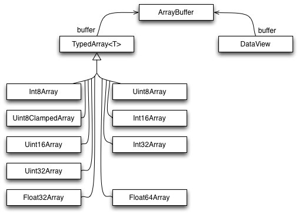

JavaScript (JS) is the default scripting language in HTML, <script> ... <script> - type attribute is not required
JavaScript identifiers are case-sensitive
if you put a number in quotes, it will be treated as a text string
declare all variables at the beginning of a script
undeclared variable or without a value will have the value undefined and same type
if you re-declare a JavaScript variable, it will not lose its value
undefined and null are equal in value but different in type
comparing(===) two JavaScript objects will always return false
all JavaScript objects have a toString() method
most indexes starts at 0
5 different data types that can contain values
string
number
boolean
object
function
3 types of objects
Object
Date
Array
2 data types that cannot contain values
null
undefined
data types (as returned with typeof)
string
number (number | Infinity | NaN)
boolean
undefined
function
object (objects | arrays | null)
objects and functions are variables
UPPERCASE - for constants and global variables
always use lower case file names (if possible)
AVOID
global variables
new ...
== (always converts (to matching types) before comparison)
using eval()
activity in loop and its definition statements (predefine vars: i, length,..)
using with
DO
variables used in a function should be declared as local variables
declarations at the top of each script or function (also goes for loop variables)
{} instead of new Object()
"" instead of new String()
0 instead of new Number()
false instead of new Boolean()
[] instead of new Array()
/()/ instead of new RegExp()
function (){} instead of new Function()
=== (forces comparison of values and type)
assign default values to arguments
end switch statements with a default
acces DOM element once and use it as a local variable
reduce DOM size
avoid creating new variables, move data directly to target
in external script tag: defer="true" - specifies that the script should be executed after the page has finished parsing
OR window.onload = function() { var element = document.createElement("script"); element.src = "st.js"; document.body.appendChild(element);};
<script> tag attributes
async - Boolean attribute indicating that the browser should, if possible, load the script asynchronously, must not be used if the src attribute is absent (i.e. for inline scripts), dynamically inserted scripts (using document.createElement) load asynchronously by default, so to turn on synchronous loading (i.e. scripts load in the order they were inserted) set async=false
crossorigin - normal script elements pass minimal information to the window.onerror for scripts which do not pass the standard CORS checks, to allow error logging for sites which use a separate domain for static media, use this attribute
defer - Boolean attribute is set to prevent the DOMContentLoaded event from firing until the script has loaded and finished evaluating, such scripts are executed in the order in which they appear in the document, must not be used if the src attribute is absent (i.e. for inline scripts), to achieve a similar effect for dynamically inserted scripts use async=false instead
integrity - contains inline metadata that a user agent can use to verify that a fetched resource has been delivered free of unexpected manipulation. See Subresource Integrity.
nomodule - Boolean attribute is set to indicate that the script should not be executed in browsers that support ES2015 modules - in effect, this can be used to serve fallback scripts to older browsers that do not support modular JavaScript code
nonce - cryptographic nonce (number used once) to whitelist inline scripts in a script-src Content-Security-Policy, server must generate a unique nonce value each time it transmits a policy, it is critical to provide a nonce that cannot be guessed as bypassing a resource policy is otherwise trivial
src - URI of an external script, can be used as an alternative to embedding a script directly within a document, should not have a script embedded inside its tags
ECMAScript (ES) is a JavaScript standard meant to ensure the interoperability of web pages across different web browsers, in this book will be referenced in some cases as ES2015, ES2016, etc.
// variables list
var one_1, _2, $_3;
/*
* variables definition
*/
one_1 = 1;
_2 = 2.02;
$_3 = one_1 + _2;
var nr_4 = "four";
var fifth = 5.55, sixth = 6.98;
var seven = 7.77,
eight = 8.0937895;
var x = "5" + 2 + 3; // 523
var x = 2 + 3 + "5"; // 55
// addition and concatenation
var x = 5 + 7; // x.valueOf() is 12, typeof x is a number
var x = 5 + "7"; // x.valueOf() is 57, typeof x is a string
var x = "5" + 7; // x.valueOf() is 57, typeof x is a string
var x = 5 - 7; // x.valueOf() is -2, typeof x is a number
var x = 5 - "7"; // x.valueOf() is -2, typeof x is a number
var x = "5" - 7; // x.valueOf() is -2, typeof x is a number
var x = 5 - "x"; // x.valueOf() is NaN, typeof x is a number
// completing statements
function myFunction(a) {
var
power = 10; // var was assigned, JS tried to complete var definition
return // will return undefined from this function, return - is a complete statement
a * power;
}
// see "Scope,var,let,const" article for extensive information about variables definition
AVOID
// complicates your code and slow down execution speed
var x = new String(); // Declares x as a String object
var y = new Number(); // Declares y as a Number object
var z = new Boolean(); // Declares z as a Boolean object
var x = 0;
var y = "10";
if (x == 10) // false
if (x = 10) // true
if (x = 0) // false
if (x == y) // true
if (x === y) // false
switch(x) { case 10: alert("Hello"); } // works - types are the same
switch(x) { case "10": alert("Hello"); } // types are different
for (var i = 0; i < 10; i++) {
// some code
}
return i; // 10
DO
// Declare at the beginning
var firstName, lastName, price, discount, fullPrice, i;
var firstName = "",
lastName = "",
price = 0,
discount = 0,
fullPrice = 0,
myArray = [],
arr_length = myArray.length,
myObject = {};
// Use later
firstName = "John";
lastName = "Doe";
price = 19.90;
discount = 0.10;
fullPrice = price * 100 / discount;
for (i = 0; i < arr_length; i++) { ... }
var x1 = {}; // new object
var x2 = ""; // new primitive string
var x3 = 0; // new primitive number
var x4 = false; // new primitive boolean
var x5 = []; // new array object
var x6 = /()/; // new regexp object
var x7 = function(){}; // new function object
function myFunction(x, y) {
if (y === undefined) { y = 0; }
//...
}
Boolean
Boolean(10 > 9) // returns true
(10 > 9) // also returns true
10 > 9 // also returns true
// Everything With a "Value" is True
100
3.14
-15
"Hello"
"false"
7 + 1 + 3.14
// Everything Without a "Value" is False
0
-0
""
undefined
null
false
NaN
String(false) // returns "false"
String(true) // returns "true"
false.toString() // returns "false"
true.toString() // returns "true"
// !! - is not an operator, it's just the ! operator twice
console.log(navigator.userAgent.match(/MSIE 8.0/)); // null
console.log(!!navigator.userAgent.match(/MSIE 8.0/)); // returns true or false
Strings
backslash (\) escape character turns special characters into string characters
all string methods return a new string, they don't modify the original string
if you put a number in quotes, the rest of the numbers will be treated as strings, and concatenated
if you add a number and a string, the result will be a string
var carname = "Volvo XC60"; // Double quotes
var carname = 'Volvo XC60'; // Single quotes
var answer = "It's alright";
var answer = "He is called 'Johnny'";
var answer = 'He is called "Johnny"';
// escaping special characters
var x = "We are the so-called \"Vikings\" from the north.";
var x = 'It\'s alright.';
var x = "The character \\ is called backslash.";
// breaking lines
document.getElementById("demo").innerHTML =
"Hello Andrei!";
document.getElementById("demo").innerHTML = "Hello " +
"Andrei!";
METHODS
// LENGTH
var txt = "ABCDEFGHIJKLMNOPQRSTUVWXYZ";
var sln = txt.length;
// indexOf() and search() are NOT equal
// - search() method cannot take a second start position argument
// - indexOf() method cannot take powerful search values (regular expressions)
// FIND
// --- indexOf, lastIndexOf
// both indexOf(), and lastIndexOf() return -1 if the text is not found
// both methods accept a second parameter as the starting position for the search
var str = "Please locate where 'locate' occurs!";
var pos = str.indexOf("locate"); // position of the first occurrence
var pos = str.lastIndexOf("locate"); // position of the last occurrence
var pos = str.indexOf("locate",15);
// --- search
var pos = str.search("locate"); // returns the position of the match
// --- replace
str = "Please visit Microsoft and Microsoft!";
var n = str.replace("Microsoft", "W3Schools"); // case-sensitive replacement
var n = str.replace(/MICROSOFT/i, "W3Schools"); // case-insensitive replacement
var n = str.replace(/Microsoft/g, "W3Schools"); // replace all matches
// --- match - of a string inside other string
var res = str.match(/Microsoft/gi); // ['Microsoft','Microsoft']
// --- matchAll() (ES2020) - returns an iterator of all results matching a string against a regular expression, including capturing groups
const regexp = /t(e)(st(\d?))/g;
const str = 'test1test2';
const array = [...str.matchAll(regexp)];
console.log(array[0]); // ["test1", "e", "st1", "1"]
console.log(array[1]); // ["test2", "e", "st2", "2"]
// EXTRACT
var str = "Apple, Banana, Kiwi";
// --- slice(start_pos [,end_pos] )
var res = str.slice(7, 13); // Banana
var res = str.slice(-12, -6); // Banana - with negative(from end) offsets
var res = str.slice(7); // Banana, Kiwi
var res = str.slice(-12); // Banana, Kiwi - with negative(from end) offsets
// --- substring(start_pos [,end_pos] )
// similar to slice but dont accept negative indexes
var res = str.substring(7, 13); // Banana
var res = str.substring(7); // Banana, Kiwi
// --- substring(start_pos [,length] )
var res = str.substr(7, 6); // Banana
var res = str.substr(7); // Banana, Kiwi
// CASE CONVERSION
var text1 = "Hello World!";
var text2 = text1.toUpperCase(); // to upper case
var text2 = text1.toLowerCase(); // to lower case
// JOIN STRINGS
var text = "Hello".concat(" ", "World!"); // same as "Hello" + " " + "World!"
var text1 = "Hello";
var text2 = "World";
var text3 = text1.concat(" ", text2);
var text = text1.concat(" ", "World", " ", "!");
// TRIM
var str = " Hello World! ";
alert(str.trim()); // "Hello World!"
// EXTRACT CHARACTER
var str = "HELLO WORLD";
str.charAt(0); // returns H as character at position 0
str.charCodeAt(0); // returns 72 unicode of the character at position 0
str[0]; // returns H
// if no character is found, [ ] returns undefined, while charAt() returns an empty string
// CONVERT TO ARRAY
var txt = "a,b c,d|e,f g,h"; // String
txt.split(","); // Split on commas
txt.split(" "); // Split on spaces
txt.split("|"); // Split on pipe
txt.split(""); // Split in characters
// convert a set of Unicode values into characters
var res = String.fromCharCode(72, 69, 76, 76, 79);
// RANDOM STRING
Math.random().toString(36).slice(2)
// EXTRACT DOMAIN NAME
let email = 'xyz@gmail.com';
email.substring(email.indexOf('@') + 1); // output - gmail.com
ES2015
// Template Literals
// 'Your name is ' + first + ' ' + last + '.'
var name = `Your name is ${first} ${last}.`
// 'http://localhost:3000/api/messages/' + id
var url = `http://localhost:3000/api/messages/${id}`
// multi-line string
var test = `<body>
<article>
<time datetime='${ precalculatedIso }'>${ precalculatedIso }</time>
</article>
<div>Hobbies:</div>
<ul>
${hobbies.map(hobby => `<li>${hobby}</li>`).join(" ")}
</ul>
</body>`;
// function call ( avoid () )
let name = "Andrei", age = "32";
parseStr`My name is ${name}, and I'm ${age} years old`;
function parseStr(templates, name, age){
// raw - special property, allows to access the raw strings
console.log('Template: ', templates); // [“My name is”, “, and I'm “, “ years old”, raw:[...]]
console.log('Param 1: ', name); // Andrei
console.log('Param 2: ', age); // 32
}
// func([“My name is”, “, and I'm “, “ years old”], <value of name>, <value of age>);
// Construct an HTTP request prefix is used to interpret the replacements and construction
GET`http://foo.org/bar?a=${a}&b=${b}
Content-Type: application/json
X-Credentials: ${credentials}
{ "foo": ${foo},
"bar": ${bar}}`(myOnReadyStateChangeHandler);
var str = "Hello world, welcome to the universe.";
// str.startsWith(search_val [,start_pos]) = true/false
str.startsWith("world", 6);
if (!String.prototype.startsWith) {
Object.defineProperty(String.prototype, 'startsWith', {
value: function(search, pos) {
return this.substr(!pos || pos < 0 ? 0 : +pos, search.length) === search;
}
});
}
// str.endsWith(search_val [,length]) = true/false
str.endsWith("universe.");
if (!String.prototype.endsWith) {
String.prototype.endsWith = function(search, this_len) {
if (this_len === undefined || this_len > this.length) {
this_len = this.length;
}
return this.substring(this_len - search.length, this_len) === search;
};
}
// str.repeat( count ) = repeat string
str.repeat(2);
if (!String.prototype.repeat) {
String.prototype.repeat = function(count) {
'use strict';
if (this == null) {
throw new TypeError('can\'t convert ' + this + ' to object');
}
var str = '' + this;
count = +count;
if (count != count) {
count = 0;
}
if (count < 0) {
throw new RangeError('repeat count must be non-negative');
}
if (count == Infinity) {
throw new RangeError('repeat count must be less than infinity');
}
count = Math.floor(count);
if (str.length == 0 || count == 0) {
return '';
}
// Ensuring count is a 31-bit integer allows us to heavily optimize the
// main part. But anyway, most current (August 2014) browsers can't handle
// strings 1 << 28 chars or longer, so:
if (str.length * count >= 1 << 28) {
throw new RangeError('repeat count must not overflow maximum string size');
}
var maxCount = str.length * count;
count = Math.floor(Math.log(count) / Math.log(2));
while (count) {
str += str;
count--;
}
str += str.substring(0, maxCount - str.length);
return str;
}
}
// template literal revision - parse a template literal with a function
function fn(string, substitute) {
if(substitute === 'ES6') { substitute = 'ES2015' }
return substitute + string[1];
}
const version = 'ES6';
const result = fn`${version} was a major update`; // ES2015 was a major update
// represents invalid escape sequences as undefined:
function fn(string, substitute) {
console.log(substitute); // escape sequences:
console.log(string[1]); // undefined
}
const str = 'escape sequences:';
const result = fn`${str} \ubuntu C:\xxx\uuu`;
// using illegal escape sequences in a regular template literal still causes an error:
const result = `\ubuntu`; // SyntaxError: Invalid Unicode escape sequence
Escape sequences
Code
Result
\'
Single quote
\"
Double quote
\\
Backslash
\b
Backspace
\f
Form Feed
\n
New Line
\r
Carriage Return
\t
Horizontal Tabulator
\v
Vertical Tabulator
Numbers
never write a number with a leading zero (like 07)
Infinity and -Infinity are returned on overflow
if you put a number in quotes, the rest of the numbers will be treated as strings, and concatenated
if you add a number and a string, the result will be a string
BigInt (ES2020) - primitive that provides a way to represent whole numbers larger than 2^53, created by appending n to the end of the integer
Numeric Separators (ES2021) - visual separation between groups of digits
var x = 3.14; // A number with decimals
var y = 3; // A number without decimals
var x = 123e5; // 12300000
var y = 123e-5; // 0.00123
// integers (numbers without a period or exponent notation) are accurate up to 15 digits
var x = 999999999999999; // x will be 999999999999999
var y = 9999999999999999; // y will be 10000000000000000
// maximum number of decimals is 17, but floating point arithmetic is not always 100% accurate
var x = 0.2 + 0.1; // x will be 0.30000000000000004
// to solve the problem above, it helps to multiply and divide
var x = (0.2 * 10 + 0.1 * 10) / 10; // x will be 0.3
// JavaScript will try to convert strings to numbers in all numeric operations
// except concatenation (+)
var x = "100";
var y = "10";
var z = x / y; // z will be 10
var z = x * y; // z will be 1000
var z = x - y; // z will be 90
var z = x + y; // z will not be 110 (It will be 10010) !
// NaN - Not a Number
var x = 100 / "Apple"; // x will be NaN (Not a Number)
var z = NaN + 7; // z will be NaN
var x = 100 / "Apple";
isNaN(x); // ES2015 - returns true because x is Not a Number
typeof NaN; // returns "number"
// Infinity
var myNumber = 2;
while (myNumber != Infinity) {
myNumber = myNumber * myNumber;
}
// myNumber will be :
// 4
// 16
// 256
// 65536
// 4294967296
// 18446744073709552000
// 3.402823669209385e+38
// 1.157920892373162e+77
// 1.3407807929942597e+154
var x = 2 / 0; // x will be Infinity
var y = -2 / 0; // y will be -Infinity
typeof Infinity; // returns "number"
// binary (0b)
0b111110111 === 503
// octal (0o)
0o767 === 503
// Hexadecimal (0x)
0xFF === 255
STATIC PROPERTIES
// can only use it as Number.*
Number.MAX_VALUE; // 1.7976931348623157e+308 , larger numbers are represented as infinity
Number.MIN_VALUE; // the value closest to 0 , 5e-324 , smaller numbers are converted to 0
Number.NEGATIVE_INFINITY; // -Infinity
Number.POSITIVE_INFINITY; // Infinity , returned on overflow
Number.NaN;
STATIC METHODS
parseInt("10"); // returns 10
parseInt("10.33"); // returns 10
parseInt("10 20 30"); // returns 10
parseInt("10 years"); // returns 10
parseInt("years 10"); // returns NaN
parseFloat("10"); // returns 10
parseFloat("10.33"); // returns 10.33
parseFloat("10 20 30"); // returns 10
parseFloat("10 years"); // returns 10
parseFloat("years 10"); // returns NaN
// by default, JavaScript displays numbers as base 10 decimals
var num = 32;
num.toString(10); // returns 32
num.toString(32); // returns 10
num.toString(16); // returns 20
num.toString(8); // returns 40
num.toString(2); // returns 100000
// CONVERTING variables to Numbers
Number(true); // returns 1
Number(false); // returns 0
Number("10"); // returns 10
Number(" 10"); // returns 10
Number("10 "); // returns 10
Number(" 10 "); // returns 10
Number("10.33"); // returns 10.33
Number("10,33"); // returns NaN
Number("10 33"); // returns NaN
Number("John"); // returns NaN
Number(new Date("2017-09-30")); // 1506729600000 - number of milliseconds since 1.1.1970
var num = 59753657.56789;
num.toExponential(); // 5.975365756789e+7 , exponential version
// toFixed - converts number to string, keeping a specified number of decimals
// perfect for working with money
var num = 9.656;
num.toFixed(0); // returns 10
num.toFixed(2); // returns 9.66
num.toFixed(4); // returns 9.6560
num.toFixed(6); // returns 9.656000
//format number to a specified length
var num = 13.3714;
num.toPrecision(); // 13.3714
num.toPrecision(2); // 13
num.toPrecision(3); // 13.4
num.toPrecision(10); // 13.37140000
var num = 0.001658853;
num.toPrecision(); // 0.001658853
num.toPrecision(2); // 0.0017
num.toPrecision(3); // 0.00166
num.toPrecision(10); // 0.001658853000
// valueOf - primitive value of a number
// no reason to use
var numObj = new Number(10); // typeof numObj = object
var num = numObj.valueOf(); // typeof num = number
ES2015
Number.EPSILON; // 2.220446049250313e-16
Number.MIN_SAFE_INTEGER; // -9007199254740991
Number.MAX_SAFE_INTEGER; // 9007199254740991
// isSafeInteger = can be exactly represented as an IEEE-754 double precision number
// all integers from (253 - 1) to -(253 - 1)
Number.isSafeInteger(123) //true
Number.isSafeInteger(-123) //true
Number.isSafeInteger(5-2) //true
Number.isSafeInteger(0) //true
Number.isSafeInteger(0.5) //false
Number.isSafeInteger(Math.pow(2, 53)) //false
Number.isSafeInteger(Math.pow(2, 53) - 1) //true
Number.isSafeInteger('123') //false
Number.isSafeInteger(false) //false
Number.isSafeInteger(Infinity) //false
Number.isSafeInteger(-Infinity) //false
Number.isSafeInteger(0 / 0) //false
// isInteger = value is of the type Number, and an integer (a whole number)
Number.isInteger(123) //true
Number.isInteger(-123) //true
Number.isInteger(5-2) //true
Number.isInteger(0) //true
Number.isInteger(0.5) //false
Number.isInteger('123') //false
Number.isInteger(false) //false
Number.isInteger(Infinity) //false
Number.isInteger(-Infinity) //false
Number.isInteger(0 / 0) //false
// isFinite = value is of the type Number, and equates to a finite number
Number.isFinite(123) //true
Number.isFinite(-1.23) //true
Number.isFinite(5-2) //true
Number.isFinite(0) //true
Number.isFinite('123') //false
Number.isFinite('Hello') //false
Number.isFinite('2005/12/12') //false
Number.isFinite(Infinity) //false
Number.isFinite(-Infinity) //false
Number.isFinite(0 / 0) //false
ES2020
const theBiggestInt = 9007199254740991n;
const alsoHuge = BigInt(9007199254740991); // 9007199254740991n
const hugeButString = BigInt('9007199254740991'); // 9007199254740991n
const previousMaxSafe = BigInt(Number.MAX_SAFE_INTEGER); // 9007199254740991
const maxPlusOne = previousMaxSafe + 1n; // 9007199254740992n
const theFuture = previousMaxSafe + 2n; // 9007199254740993n, this works now!
const multi = previousMaxSafe * 2n; // 18014398509481982n
const subtr = multi - 10n; // 18014398509481972n
const mod = multi % 10n; // 2n
const bigN = 2n ** 54n; // 18014398509481984n
bigN * -1n // -18014398509481984n
const expected = 4n / 2n; // 2n
const rounded = 5n / 2n; // 2n, not 2.5n
0n === 0 // false
0n == 0 // true
const mixed = [4n, 6, -12n, 10, 4, 0, 0n]; // [4n, 6, -12n, 10, 4, 0, 0n]
mixed.sort(); // [-12n, 0, 0n, 10, 4n, 4, 6]
function isPrime(p) {
for (let i = 2n; i * i <= p; i++) {
if (p % i === 0n) return false;
}
return true;
}
function nthPrime(nth) { // takes a BigInt as an argument and returns a BigInt
let maybePrime = 2n;
let prime = 0n;
while (nth >= 0n) {
if (isPrime(maybePrime)) {
nth -= 1n;
prime = maybePrime;
}
maybePrime += 1n;
}
return prime;
}
ES2021
// --- Regular Number Literals
let budget = 1_000_000_000_000;
console.log(budget === 10 ** 12); // true
// --- Binary Literals
let nibbles = 0b1010_0001_1000_0101;
console.log(!!(nibbles & (1 << 7))); // true
// --- Hex Literal
let message = 0xA0_B0_C0;
let a = (message >> 16) & 0xFF;
console.log(a.toString(16), a); // a0, 160
let b = (message >> 8) & 0xFF;
console.log(b.toString(16), b); // b0, 176
let c = message & 0xFF;
console.log(c.toString(16), b); // c0, 192
// --- BigInt Literal
const max = 2n ** (64n - 1n) - 1n;
console.log(max === 9_223_372_036_854_775_807n);
let budget = 1_000_000_000_000n;
console.log(budget === BigInt(10 ** 12)); // true
// Valid
1_1n;
1_000n;
99999999_111111111_00000000n;
// Invalid: SyntaxError!
1_n;
0_n;
1000000_n;
1_000_000_n;
// --- Octal Literal
let x = 0o1234_5670;
let partA = (x & 0o7777_0000) >> 12; // 3 bits per digit
let partB = x & 0o0000_7777;
console.log(partA.toString(8)); // 1234
console.log(partB.toString(8)); // 5670
Arrays
special type of objects, with numbered indexes
JavaScript does not support associative arrays
use objects when you want the element names to be strings (text)
use arrays when you want the element names to be numbers
adding elements with high indexes can create undefined "holes" in an array
JavaScript automatically converts an array to a comma separated string when a primitive value is expected
var cars = ["Saab", "Volvo", "BMW"];
var cars = [
"Saab",
"Volvo",
"BMW"
];
// access and modify by index
var name = cars[0];
cars[0] = "Opel";
cars[cars.length] = "Subaru";
delete fruits[0]; // set first element to undefined
// variables of different types in the same Array
myArray[0] = Date.now;
myArray[1] = myFunction;
myArray[2] = myCars;
CHECK
Array.isArray(cars); // Array.isArray(obj) = true/false
cars.constructor.toString().indexOf("Array") > -1;
myArray.constructor === Array; // if the object is an Array function
cars instanceof Array;
// arr.every( function(currentValue, index, arr), as_this_val )
// true/false - if ALL element has passed the test
var numbers = [4, 9, 16, 25, 29];
var allOver18 = numbers.every(myFunction);
function myFunction(value, index, array) {
return value > 18;
}
// arr.some( function(currentValue, index, arr), as_this_val )
// true/false - if SOME elements passed the test
var numbers = [4, 9, 16, 25, 29];
var allOver18 = numbers.some(myFunction);
function myFunction(value, index, array) {
return value > 18;
}
PROPERTIES
// length property sets or returns the number of elements in that array
// truncates values or extends with undefined values
var namelistA = new Array(4294967296); //2 to the 32nd power = 4294967296
var namelistC = new Array(-100) //negative sign
console.log(namelistA.length); //RangeError: Invalid array length
console.log(namelistC.length); //RangeError: Invalid array length
var namelistB = [];
namelistB.length = Math.pow(2,32)-1; //set array length less than 2 to the 32nd power
console.log(namelistB.length);
fruits[5] = 'mango';
console.log(fruits[5]); // 'mango'
console.log(Object.keys(fruits)); // ['0', '1', '2', '5']
console.log(fruits.length); // 6
fruits.length = 2;
console.log(Object.keys(fruits)); // ['0', '1']
console.log(fruits.length); // 2
METHODS
// length property is always one more than the highest array index
cars.length; // 3
cars.push("Audi"); // arr.push(el1, el2,...) - add to end, changes the length
x = cars.push(); // and returns the length
cars.pop(); // removes the last element, changes the length
x = cars.pop(); // and returns the value that was "popped out"
cars.shift(); // removes first element, changes the length
x = cars.shift(); // and returns the string that was "shifted out"
cars.unshift("Dodge");// arr.unshift(el1, el2,...) - adds first element, changes the length
x = cars.unshift(); // and returns the new length
// arr.slice(start_pos, end_pos) - returns the selected elements in an array
var slice_cars = cars.slice(1);
// arr.splice(add_pos, elements_to_remove [,"new","elements",...])
cars.splice(2, 0, "Honda", "VW");
// arr.concat(arr_1 [,arr_2,...]) - merge arrays
var new_cars = ["Dodge", "Honda", "VW"];
var updated_cars = cars.concat(new_cars);
var updated_cars = cars.concat(["Dodge", "Honda", "VW"]);
// array to string
cars.toString(); // Saab,Volvo,BMW,Audi
cars.join(" * "); // Saab * Volvo * BMW * Audi
SORT
// arr.sort( [compareFunction] ) - alphabetically or by function
cars.sort();
// reverse the order of the elements
cars.reverse(); // can be used after sort, for descending ordering
// numeric sort
var points = [40, 100, 1, 5, 25, 10];
points.sort(function(a, b){return a - b}); // ascending
// points[0] = lowest, points[points.length-1] = highest value
points.sort(function(a, b){return b - a}); // descending
// points[0] = highest, points[points.length-1] = lowest value
points.sort(function(a, b){return 0.5 - Math.random()}); // random sort
Math.max.apply(null, arr); // highest number in an array
// Math.max.apply([1, 2, 3]) is equivalent to Math.max(1, 2, 3)
Math.min.apply(null, arr); // lowest number in an array
// Math.min.apply([1, 2, 3]) is equivalent to Math.min(1, 2, 3)
function myArrayMax(arr) {
var len = arr.length, max = -Infinity;
while (len--) {
if (arr[len] > max) {
max = arr[len];
}
}
return max;
}
function myArrayMin(arr) {
var len = arr.length, min = Infinity;
while (len--) {
if (arr[len] < min) {
min = arr[len];
}
}
return min;
}
// sorting objects array
var cars = [
{type:"Volvo", year:2016},
{type:"Saab", year:2001},
{type:"BMW", year:2010}
];
cars.sort (function(a, b) {return a.year - b.year}); // numeric
cars.sort (function(a, b) { // string
var x = a.type.toLowerCase();
var y = b.type.toLowerCase();
if (x < y) {return -1;}
if (x > y) {return 1;}
return 0;
});
ITERATION
// arr.forEach( function(currentValue, index, arr), as_this_val )
var numbers = [65, 44, 12, 4];
var sum = 0;
function myFunction(item, index, arr) {
sum += item; // calculate sum of all values
arr[index] = item * document.getElementById("multiplyWith").value; // multiply all values
demo.innerHTML = numbers;
}
numbers.forEach(myFunction);
// arr.map(function( function(currentValue, index, arr), as_this_val )
var numbers1 = [4, 9, 16, 25];
var numbers2 = numbers1.map(myFunction);
function myFunction(value, index, array) {
return value * 2;
}
// arr.filter( function(currentValue, index, arr), as_this_val )
// array with elements that passed the test OR empty array
var numbers = [4, 9, 16, 25];
var over18 = numbers.filter(myFunction);
function myFunction(value, index, array) {
return value > 18;
}
// arr.reduce(function(total, currentValue, currentIndex, arr), initialValue)
// works from left-to-right
var numbers1 = [4, 9, 16, 25];
var sum = numbers1.reduce(myFunction);
function myFunction(
total, // initial OR previously returned value
value,
index,
array
) {
return total + value;
}
// arr.reduceRight(function(total, currentValue, currentIndex, arr), initialValue)
// works from right-to-left
var numbers1 = [4, 9, 16, 25];
var sum = numbers1.reduce(myFunction);
function myFunction(
total, // initial OR previously returned value
value,
index,
array
) {
return total + value;
}
// arr.indexOf(item, start_pos)
// position of element OR -1
var fruits = ["Apple", "Orange", "Apple", "Mango"];
var a = fruits.indexOf("Apple");
// lastIndexOf(item, start_pos)
// position of element from the end of the array OR -1
var fruits = ["Apple", "Orange", "Apple", "Mango"];
var a = fruits.lastIndexOf("Apple");
ES2015
// arr.find( function(currentValue, index, arr), as_this_val )
// find and return first element that passed the test OR undefined
var numbers = [4, 9, 16, 25, 29];
var first = numbers.find(myFunction);
function myFunction(value, index, array) {
return value > 18;
}
// arr.findIndex( function(currentValue, index, arr), as_this_val )
// find and return index of first element that passed the test OR -1
var numbers = [4, 9, 16, 25, 29];
var first = numbers.findIndex(myFunction);
function myFunction(value, index, array) {
return value > 18;
}
// arr.fill(value [,start_pos [,end_pos]])
// returns array filled with a static value
var fruits = ["Banana", "Orange", "Apple", "Mango"];
fruits.fill("Kiwi", 2, 4);
// copyWithin( target_pos [,start_pos [,end_pos]] )
var fruits = ["Banana", "Orange", "Apple", "Mango", "Kiwi", "Papaya"];
fruits.copyWithin(2, 0, 2); // Banana,Orange,Banana,Orange,Kiwi,Papaya
// entries() - returns an Array Iterator object with key/value pairs
var fruits = ["Banana", "Orange", "Apple", "Mango"];
var x = fruits.entries();
// x.next().value = 0,Banana
// x.next().value = 1,Orange
// ...
// keys() - returns an Array Iterator object with keys of an array
var x = fruits.keys();
// x.next().value = 0
// x.next().value = 1
// ...
// array.from(object, mapFunction, thisValue)
// returns an Array object from any object with a length property or an iterable object
var myArr = Array.from("ABCDEFG"); // [ "A", "B", "C", "D", "E", "F", "G" ]
ES2016
// arr.includes(search_val [,start_pos]) = true/false
// whether an array contains a specified element
var fruits = ["Banana", "Orange", "Apple", "Mango"];
var n = fruits.includes("Banana"); // true
var n = fruits.includes("Banana", 3); // false
ES2019
// flat(depth)
let courseStudents = [
[ 'Janet', 'Martha', 'Bob', [ 'Phil', 'Candace' ] ],
[ 'Wilson', 'Taylor' ],
[ 'Edith', 'Jacob', 'Peter', 'Betty' ]
]
let flattenOneLevel = courseStudents.flat(1); // [ 'Janet', ... , [ 'Phil', 'Candace' ], 'Wilson', ... , 'Betty' ]
let flattenTwoLevels = courseStudents.flat(2); // [ 'Janet', 'Martha', 'Bob', 'Phil', 'Candace', ... , 'Betty' ]
let alwaysFlattened = courseStudents.flat(Infinity); // [ 'Janet', 'Martha', 'Bob', 'Phil', 'Candace', ... , 'Betty' ]
// flatMap() - equivalent of combing map and flat with no argument
// before ES2019
let grades = [78, 62];
let curved = grades.map(grade => [grade, grade + 7]); // [ [ 78, 85 ], [ 62, 69 ] ]
let flatMapped = [].concat.apply([], curved); // [ 78, 85, 62, 69 ]
// improve with flat()
let flatMapped = grades.map(grade => [grade, grade + 7]).flat(); // [ 78, 85, 62, 69 ]
// with ES2019 flatMap, will only flatten one level
let flatMapped = grades.flatMap(grade => [grade, grade + 7]); // [ 78, 85, 62, 69 ]
typedArray object(created by typed array constructor) describes an array-like view of an underlying binary data buffer (ArrayBuffer)
ArrayBuffer(new ArrayBuffer(length)) object is used to represent a generic, fixed-length raw binary data buffer, you create one of the typed array objects or a DataView object which represents the buffer in a specific format, and use that to read and write the contents of the buffer
DataView(new DataView(buffer [, byteOffset [, byteLength]])) view provides a low-level interface for reading and writing multiple number types in an ArrayBuffer irrespective of the platform's endianness

new TypedArray(); // new in ES2017
new TypedArray(length);
new TypedArray(typedArray);
new TypedArray(object);
new TypedArray(buffer [, byteOffset [, length]]);
where TypedArray() is one of:
Int8Array(); // -128 to 127
Uint8Array(); // 0 to 255
Uint8ClampedArray(); // 0 to 255
Int16Array(); // -32768 to 32767
Uint16Array(); // 0 to 65535
Int32Array(); // -2147483648 to 2147483647
Uint32Array(); // 0 to 4294967295
Float32Array(); // 1.2x10-38 to 3.4x1038
Float64Array(); // 5.0x10-324 to 1.8x10308
const typedArray1 = new Int8Array(8);
typedArray1[0] = 32;
console.log(typedArray1); // Int8Array [32, 0, 0, 0, 0, 0, 0, 0]
const typedArray2 = new Int8Array(typedArray1);
typedArray2[1] = 42;
console.log(typedArray2); // Int8Array [32, 42, 0, 0, 0, 0, 0, 0]
// 8-byte buffer with a Int32Array view referring to the buffer
var buffer = new ArrayBuffer(16); // buffer.byteLength = 16
var view = new Int32Array(buffer);
var view1 = new DataView(buffer);
var view2 = new DataView(buffer,12,4); //from byte 12 for the next 4 bytes
view1.setInt8(12, 42); // put 42 in slot 12
console.log(view2.getInt8(0)); // 42
Date()
Create date object :
var d = new Date();
var d = new Date(milliseconds);
var d = new Date(dateString);
var d = new Date(year, month, day, hours, minutes, seconds, milliseconds);
date objects are static, computer time is ticking, but date objects are not
JavaScript counts months from 0 to 11. January is 0. December is 11.
JavaScript Stores Dates as Milliseconds since January 01, 1970, 00:00:00 UTC (Universal Time Coordinated)
toString() method is automatically applied if you output date object
UTC (Universal Time Coordinated) is the same as GMT (Greenwich Mean Time)
when setting a date, without specifying the time zone, JavaScript will use the browser's time zone
when getting a date, without specifying the time zone, the result is converted to the browser's time zone
var d = new Date(); // current date and time, object
// one parameter will be interpreted as new Date(milliseconds)
var d = new Date(2018); // Thu Jan 01 1970 02:00:02 GMT+0200
// one day (24 hours) is 86 400 000 milliseconds
// negative values are allowed
// year, month, day, hour, minute, second, and millisecond
var d = new Date(2018, 11, 24, 10, 33, 30, 0);
// year, month
var d = new Date(2018, 11);
// one and two digit years will be interpreted as 19xx
var d = new Date(99, 11, 24); // Fri Dec 24 1999
var d = new Date(9, 11, 24); // Fri Dec 24 1909
// ----- ISO DATES
// prefered way to define date
// YYYY-MM-DD
// YYYY-MM-DDTHH:MM:SSZ
var d = new Date("2018-03-25");
var d = new Date("2018-03");
var d = new Date("2018");
// Omitting T or Z in a date-time string can give different result in different browser
var d = new Date("2018-03-25T12:00:00Z");
var d = new Date("2018-03-25T12:00:00-06:30"); // -06:30
// ----- SHORT DATES - "MM/DD/YYYY"
var d = new Date("03/25/2018");
// !!! may produce errors :
var d = new Date("2018-3-25");
var d = new Date("2018/03/25");
var d = new Date("25-03-2018");
// ----- LONG DATES - most often written with a "MMM DD YYYY"
// month and day can be in any order
// month can be written in full (January), or abbreviated (Jan)
// commas are ignored, names are case insensitive
var d = new Date("Mar 25 2018");
var d = new Date("25 Mar 2018");
var d = new Date("January 25 2018");
var d = new Date("Jan 25 2018");
var d = new Date("JANUARY, 25, 2018");
// ----- PARSE DATE STRING
var d = Date.parse("March 21, 2012");
CHECK
myDate.constructor.toString().indexOf("Date") > -1;
myDate.constructor === Date; // if the object is an Date function
METHODS
var d = Date.now(); // Get the time. ECMAScript 5
// milliseconds between specified date and midnight of 1970/01/01 according to UTC
// (year, month, day, hours, minutes, seconds, millisec)
var d = Date.UTC(2018, 02, 30); // 1333065600000
d.toISOString(); // 2018-08-24T15:13:11.341Z
d.toUTCString(); // UTC string = Fri, 24 Aug 2018 14:31:32 GMT
d.toJSON(); // JSON date = YYYY-MM-DDTHH:mm:ss.sssZ = 2018-08-24T15:15:17.565Z
d.toDateString(); // Fri Aug 24 2018
d.toTimeString(); // 18:21:58 GMT+0300 (GTB Daylight Time)
// using locale conventions
// date (not the time) portion of a Date object as a string
d.toLocaleDateString(); // 8/24/2018
// time portion of a Date object as a string
d.toLocaleTimeString(); // 6:18:25 PM
// Date object to a string
d.toLocaleString(); // 8/24/2018, 6:20:07 PM
GET METHODS
d.getFullYear(); // year as a four digit number (yyyy)
d.getMonth(); // month as a number (0-11)
d.getDate(); // day as a number (1-31)
d.getHours(); // hour (0-23)
d.getMinutes(); // minute (0-59)
d.getSeconds(); // second (0-59)
d.getMilliseconds(); // millisecond (0-999)
d.getTime(); // time (milliseconds since January 1, 1970)
d.getDay(); // weekday as a number (0-6)
d.getUTCDate(); // same as getDate(), but UTC date
d.getUTCDay(); // same as getDay(), but UTC day
d.getUTCFullYear(); // sSame as getFullYear(), but UTC year
d.getUTCHours(); // same as getHours(), but UTC hour
d.getUTCMilliseconds(); // same as getMilliseconds(), but UTC milliseconds
d.getUTCMinutes(); // same as getMinutes(), but UTC minutes
d.getUTCMonth(); // same as getMonth(), but UTC month
d.getUTCSeconds(); // same as getSeconds(), but UTC seconds
d.getTimezoneOffset(); // time difference between UTC time and local time, in minutes
SET METHODS
var d = new Date("2018-03-25T12:00:00Z");
d.setDate(); // day as a number (1-31)
d.setFullYear(); // year (optionally month and day)
d.setHours(); // hour (0-23)
d.setMilliseconds(); // milliseconds (0-999)
d.setMinutes(); // minutes (0-59)
d.setMonth(); // month (0-11)
d.setSeconds(); // seconds (0-59)
d.setTime(); // time (milliseconds since January 1, 1970)
d.setUTCDate(); // day according to universal time
d.setUTCFullYear(); // year according to universal time
d.setUTCHours(); // hour according to universal time
d.setUTCMilliseconds(); // milliseconds according to universal time
d.setUTCMinutes(); // minutes according to universal time
d.setUTCMonth(); // month according to universal time
d.setUTCSeconds(); // seconds according to universal time
Objects
JavaScript objects are containers for named values, called properties and methods/values
all JavaScript values, except primitives (string, number, boolean, null, undefined) are objects
Dates, Maths, Regular expressions, Arrays, Function, Objects are always objects
when a JavaScript variable is declared with the keyword "new", the variable is created as an object, avoid this for Strings, Numbers, and Booleans
primitive values are immutable (they are hardcoded and therefore cannot be changed): "Hello" is always "Hello", 3.14 is always 3.14, true is always true
object method is an object property containing a function definition
objects are mutable: they are addressed by reference, not by value
delete operator is designed to be used on object properties, t has no effect on variables or functions
object properties descriptors for defineProperty methods:
value - content itself, displayed via property call [false]
configurable - writability of a property's meta-data [false]
enumerable - allow to be viewed during enumeration of the properties [false]
writable - allow property change with assignment operator [false]
get - getter for the property [undefined]
set - setter for the property [undefined]
by default, values added using Object.defineProperty() are immutable, property addition through assignment gives inverse result
all attributes can be read, but only the value attribute can be changed (and only if the property is writable)
JavaScript objects inherit the properties of their prototype, deleting a prototype property affects all objects inherited from the prototype
getters and setters allow you to define Object Accessors (Computed Properties)
simpler syntax
equal syntax for properties and methods
can secure better data quality
useful for doing things behind-the-scenes
this keyword inside object is the object from which it was called, in constructor, it does not have YET any value
constructor function is set of default property->methods/values
adding property->methods/values to object created by constructor will modify only that object, NOT all objects created by parent constructor function
all JavaScript objects inherit property->methods/values from a prototype
use .prototype to add new properties for all instances of a constructor function
never modify the prototypes of standard JavaScript objects
object literal notation vs JSON
JSON permits only property definition using "property": value syntax, property name must be double-quoted, and the definition cannot be a shorthand
in JSON the values can only be strings, numbers, arrays, true, false, null, or another (JSON) object
function value (methods) can not be assigned to a value in JSON
Date object will be a string after JSON.parse()
JSON.parse() will reject computed property names and an error will be thrown
if (typeof myObj !== "undefined" && myObj !== null) { ... }
// object definition
var person = {
firstName:"Andre",
lastName:"IT",
age:31,
eyeColor:"green",
language : "NO",
new : true, // reserved word as property name - ES5
fullName : function() { // object method , same as getter/setter
return this.firstName + " " + this.lastName;
},
get lang() { // getter
return this.language;
},
set lang(value) { // setter
this.language = value.toUpperCase();
},
//-----ES2015
property( parameters… ) {},
l() { return this.language; }
async property( parameters… ) {},
async f() {
await some_promise;
}
async* generator( parameters… ) {},
async* f() {
yield 1;
yield 2;
yield 3;
}
[property]( parameters… ) {}, // computed key
['foo' + 2]() {
return 2;
}
*[generator]( parameters… ) {}, // computed key
* g() {
var index = 0;
while (true)
yield index++;
}
async [property]( parameters… ) {}, // computed key
};
var x_p = person; // object x_p is not a copy of person, it is person object
x_p.age = 10; // this will change both x_p.age and person.age !
//-----ES2015 - computed properties - rejected by JSON !
var param = 'size';
var i = 0;
var a = {
['foo' + ++i]: i,
['foo' + ++i]: i,
['foo' + ++i]: i,
[param]: 12,
['mobile_' + param]: 4
};
// objects constructor
function Person(first, last, age, eye) {
this.firstName = first;
this.lastName = last;
this.age = age;
this.eyeColor = eye;
this.changeNames = function (f, l) { // default method for all instance of this constructor
this.firstName = f;
this.lastName = l;
};
}
var johnDoe = new Person("John", "Doe", 50, "blue"); // Person instance
// ADD property ONLY for specific object
person.nationality = "English";
johnDoe.UCnames = function () {
return this.firstName.toUpperCase() + " " + this.lastName.toUpperCase();
};
johnDoe.UCnames(); // using own method
johnDoe.changeNames("J", "D"); // using parent constructor
//-----ES2015
var a = 'foo', b = 42, c = {};
var o = {a, b, c}; // same as: var o = {a: a, b: b, c: c}
o.a === {a}.a // true
// ACCESS property
person.age; // same as: person["age"]
person[("a"+"ge")];
person.fullName();
person.fullName; // fullName-function definition
person.lang(); // usage of a getter
person.firstName.toUpperCase(); // built-in String object method for string property
// CHECK
person.hasOwnProperty('language'); // true
"key" in obj // true, regardless of the actual value
!("key" in obj) // true if "key" doesn't exist in object
// EDIT property of a specific object
person.firstName = "A";
person.lang = "en"; // usage of a setter
johnDoe.firstName = "J";
// DELETE property
delete person.age; // or delete person["age"];
// Enumerate Properties
for (x in person) {
txt += person[x];
}
//-----ES2015 - enhanced object literals
var serviceBase = {port: 3000, url: 'azat.co'},
getAccounts = function(){return [1,2,3]}
var accountService = {
__proto__: serviceBase,
getAccounts,
toString() {
return JSON.stringify((super.valueOf()))
},
getUrl() {
return "http://" + this.url + ':' + this.port
},
[ 'valueOf_' + getAccounts().join('_') ]: getAccounts()
};
accountService.valueOf_1_2_3; // [1,2,3]
accountService.port; // 3000
accountService.url; // azat.co
accountService.getUrl(); // azat.co
PROTOTYPE
// add property for ALL objects of a Person objects constructor
Person.prototype.LCnames = function() {
return this.firstName.toLowerCase() + " " + this.lastName.toLowerCase();
};
// CLASSICAL SINGLE/MULTIPLE INHERITANCE
function gameArea() { // gameArea - superclass
this.id = 7;
this.doit = function() { console.info('doit'); }
}
function Shape() { // Shape - superclass
this.x = 0;
this.y = 0;
}
Shape.prototype.move = function(x, y) { // Shape - superclass method
this.x += x;
this.y += y;
console.info('Shape moved.');
};
function Rectangle() { // Rectangle - subclass
gameArea.call(this); // call super constructor - single/first inheritance
Shape.call(this); // call super constructor - next inheritance
}
// all newly gameArea properties will be available automatically for Rectangle
Rectangle.prototype = Object.create(gameArea.prototype); // inherit single/first class
// you have to reassign superclass to have new properties update, if something changed
Object.assign(Rectangle.prototype, Shape.prototype); // mixin another
Rectangle.prototype.constructor = Rectangle; // re-assign constructor
var rect = new Rectangle();
// rect instanceof gameArea = true - rect is an instance of Shape
// rect instanceof Shape = false - rect is not an instance of Shape
// rect instanceof Rectangle = true - rect is an instance of Rectangle
rect.move(1, 1);
rect.doit();
gameArea.prototype.doit2 = function() { console.info('doit2'); };
rect.doit2(); // = 'doit2' - property is available
Shape.prototype.doit3 = function() { console.info('doit3'); };
rect.doit3(); // = 'undefined' - re-assign Shape class to have this method available in Rectangle
METHODS
// --- Object.create() - create new object using an existing object __proto__
// --- Object.create(null) = {} - no JS Object.prototype inheritance
var new_obj = Object.create(Object.prototype, {
foo: { // foo is a regular 'value property'
writable: true,
configurable: true,
value: 'hello'
},
bar: { // bar is a getter-and-setter (accessor) property
configurable: false,
get: function() { return 10; },
set: function(value) { console.log('Setting `o.bar` to', value); }
},
baz: { // with ES2015 Accessors
get() { return 10; },
set(value) { console.log('Setting `o.baz` to', value); }
}
});
// --- Object.assign()
// copy values of all enumerable own properties from one or more objects
var new_obj_copy = Object.assign({}, new_obj); // cloning
let new_obj_copy = JSON.parse(JSON.stringify(new_obj)); // deep cloning
// --- Object.defineProperty
Object.defineProperty(person, "incrementAge", {
get : function () { this.age++; }
});
Object.defineProperty(person, "language", {
value: "EN",
writable : true, // allow to change
enumerable : true, // allow enumeration
configurable : false, // allow reconfiguration
get : function() { return language },
set : function(value) { language = value.toUpperCase() }
});
Object.defineProperty(person, "language", {enumerable:false});
// --- Object.defineProperties
Object.defineProperties(person, {
'property1': {
value: true,
writable: true
},
'property2': { ... }
});
// obj.hasOwnProperty(prop) - own, not inherited property
person.hasOwnProperty('language'); // true
// Object.hasOwn(instance, prop)
Object.hasOwn(person, 'language'); // true
// --- Object.getOwnPropertyDescriptor(obj, prop)
// --- Object.getOwnPropertyDescriptors(obj)
const foo_desc = Object.getOwnPropertyDescriptor(new_obj, 'foo');
const new_obj_desc = Object.getOwnPropertyDescriptors(new_obj);
console.log(foo_desc.configurable); // true
console.log(foo_desc.value); // 'hello'
console.log(new_obj_desc,foo.configurable); // true
console.log(new_obj_desc.foo.value); // 'hello'
// decriptors data: value, writable, configurable, enumerable [, get, set]
// --- Object.getOwnPropertyNames(obj)
// array of all properties (including non-enumerable, except which use Symbol)
// found directly upon a given object
Object.getOwnPropertyNames(new_obj); // ["foo","bar","baz"]
// --- Object.getOwnPropertySymbols(obj) - empty unless you set symbol properties on the object
// obj.propertyIsEnumerable(prop)
person.propertyIsEnumerable(property1); // false - it was set by default by defineProperty
var obj = { a: 5, b: 7, c: 9 };
// --- Object.entries(obj) = array of [key,value] pairs
Object.entries(obj).forEach(([key, value]) => {
console.log(`${key} ${value}`); // "a 5", "b 7", "c 9"
});
// --- Object.keys(obj) = array of property names
Object.keys(obj); // ["a","b","c"]
// --- Object.values(obj) = array of property values
Object.values(obj); // [5,7,9]
// --- Object.fromEntries (ES2019) - reverse of Object.entries
obj = Object.fromEntries([['a', 0], ['b', 1]]); // { a: 0, b: 1 }
// object-to-object
obj = { abc: 1, def: 2, ghij: 3 };
res = Object.fromEntries(
Object.entries(obj)
.filter(([ key, val ]) => key.length === 3)
.map(([ key, val ]) => [ key, val * 2 ])
); // res is { 'abc': 2, 'def': 4 }
// object from existing collection
map = new Map([ [ 'a', 1 ], [ 'b', 2 ], [ 'c', 3 ] ]);
obj = Object.fromEntries(map);
query = Object.fromEntries(new URLSearchParams('foo=bar&baz=qux'));
arr = [ { name: 'Alice', age: 40 }, { name: 'Bob', age: 36 } ];
obj = Object.fromEntries(arr.map(({ name, age }) => [ name, age ]));
// preventExtensions, seal, freeze - are irevertible !
// --- Object.preventExtensions(obj) / Object.isExtensible(obj)
// prevents addition of new own object properties but not to prototype, or deleting
const object1 = {};
console.log(Object.isExtensible(object1)); // true
Object.preventExtensions(object1);
console.log(Object.isExtensible(object1)); // false
// --- Object.seal(obj) - prevents adding new and configuring of existing properties
// still allows values change for writable
Object.seal(object1);
Object.isSealed(object1); // true
// --- Object.freeze(obj) - prevents add/remove/change of property, prototype and configs
Object.freeze(object1);
Object.isFrozen(object1); // true
// --- Object.getPrototypeOf()
const prototype1 = {};
const object1 = Object.create(prototype1);
Object.getPrototypeOf(object1) === prototype1 // true
Object.is('foo', 'foo'); // true
Object.is(window, window); // true
Object.is([], []); // false
const date1 = new Date(Date.UTC(2012, 11, 20, 3, 0, 0));
console.log(date1.toLocaleString('ar-EG')); // "٢٠/١٢/٢٠١٢ ٤:٠٠:٠٠ ص"
const number1 = 123456.789;
console.log(number1.toLocaleString('de-DE')); // "123.456,789"
function shallowCopy( original ) {
// First create an empty object with
// same prototype of our original source
var clone = Object.create( Object.getPrototypeOf( original ) );
var i , keys = Object.getOwnPropertyNames( original );
for ( i = 0; i < keys.length; i ++ ) {
// copy each property into the clone
Object.defineProperty(
clone,
keys[ i ],
Object.getOwnPropertyDescriptor( original , keys[ i ])
);
}
return clone ;
}
Operators
Comparison
// x = 5
// equal to
x == 8 // false
x == 5 // true
x == "5" // true
// equal value and equal type
x === 5 // true
x === "5" // false
// not equal
x != 8 true
// not equal value or not equal type
x !== 5 // false
x !== "5" // true
x !== 8 // true
// greater than
x > 8 // false
// less than
x < 8 // true
// greater than or equal to
x >= 8 // false
// less than or equal to
x <= 8 // true
Logical
// x = 6, y = 3
// and
(x < 10 && y > 1) // true
// or
(x == 5 || y == 5) // false
// not
!(x == y) // true
Combine Logical Operators and Assignment Expressions (ES021)
// "Or Or Equals" (or, the Mallet operator :wink:)
a ||= b;
a || (a = b);
// "And And Equals"
a &&= b;
a && (a = b);
// "QQ Equals"
a ??= b;
a ?? (a = b);
function example(opts) {
// Setters are not needlessly called.
opts.foo ??= 'bar'
// No repetition of `opts.baz`.
opts.baz ??= 'qux';
}
example({ foo: 'foo' })
let x = 0;
const obj = {
get x() {
return x;
},
set x(value) {
console.log('setter called');
x = value;
}
};
// This always logs "setter called"
obj.x += 1;
assert.equal(obj.x, 1);
// Logical operators do not call setters unnecessarily
// This will not log.
obj.x ||= 2;
assert.equal(obj.x, 1);
// But setters are called if the operator does not short circuit
// "setter called"
obj.x &&= 3;
assert.equal(obj.x, 3);
document.getElementById('previewZone').innerHTML ||= '<i>Nothing to preview</i>';
Conditional (Ternary)
age = Number(age);
if (isNaN(age)) {
voteable = "Input is not a number";
} else {
voteable = (age < 18) ? "Too young" : "Old enough";
}
var cond1 = true,
cond2 = false,
access = cond1 ? (cond2 ? "true true": "true false") : (cond2 ? "false true" : "false false");
var func2 = function( .. ) {
return cond1 ? value1s
: condition2 ? value2
: condition3 ? value3
: value4
}
const response = {
settings: {
nullValue: null,
height: 400,
animationDuration: 0,
headerText: '',
showSplashScreen: false
}
};
// --- || - or
const undefinedValue = response.settings.undefinedValue || 'some other default'; // result: 'some other default'
const nullValue = response.settings.nullValue || 'some other default'; // result: 'some other default'
// --- ?? - nullish coalescing (ES2020)
const undefinedValue = response.settings.undefinedValue ?? 'some other default'; // result: 'some other default'
const nullValue = response.settings.nullValue ?? 'some other default'; // result: 'some other default'
const headerText = response.settings.headerText ?? 'Hello, world!'; // result: ''
const animationDuration = response.settings.animationDuration ?? 300; // result: 0
const showSplashScreen = response.settings.showSplashScreen ?? true; // result: false
// --- ?. - optional chaining (ES2020)
var street = user.address?.street
var fooValue = myForm.querySelector('input[name=foo]')?.value
// when other value than undefined is desired for the missing case
// can usually be handled with the Nullish coalescing operator
const animationDuration = response.settings?.animationDuration ?? 300;
// interfaces that have optional methods
iterator.return?.() // manually close an iterator
Comparing Different Types
2 < 12 // true
2 < "12" // true
2 < "John" // false
2 > "John" // false
2 == "John" // false
// "2" will be greater than "12", because (alphabetically) 1 is less than 2
"2" < "12" // false
"2" > "12" // true
"2" == "12" // false
Arithmetic
Operator
Description
+
Addition
-
Subtraction
*
Multiplication
/
Division
%
Modulus (Remainder)
++
Increment
--
Decrement
Assignment
Operator
Example
Same As
=
x = y
x = y
+=
x += y
x = x + y
-=
x -= y
x = x - y
*=
x *= y
x = x * y
/=
x /= y
x = x / y
%=
x %= y
x = x % y
<<=
x <<= y
x = x << y
>>=
x >>= y
x = x >> y
>>>=
x >>>= y
x = x >>> y
&=
x &= y
x = x & y
^=
x ^= y
x = x ^ y
|=
x |= y
x = x | y
**=
x **= y
x = x ** y
Type
Operator
Description
typeof
Returns the type of a variable
instanceof
Returns true if an object is an instance of an object type
Operator Precedence
Value
Operator
Description
Example
20
( )
Expression grouping
(3 + 4)
19
.
Member
person.name
19
[]
Member
person["name"]
19
()
Function call
myFunction()
19
new
Create
new Date()
17
++
Postfix Increment
i++
17
--
Postfix Decrement
i--
16
++
Prefix Increment
++i
16
--
Prefix Decrement
--i
16
!
Logical not
!(x==y)
16
typeof
Type
typeof x
15
**
Exponentiation (ES2016)
10 ** 2
14
*
Multiplication
10 * 5
14
/
Division
10 / 5
14
%
Division Remainder
10 % 5
13
+
Addition
10 + 5
13
-
Subtraction
10 - 5
12
<<
Shift left
x << 2
12
>>
Shift right
x >> 2
12
>>>
Shift right (unsigned)
x >>> 2
11
<
Less than
x < y
11
<=
Less than or equal
x <= y
11
>
Greater than
x > y
11
>=
Greater than or equal
x >= y
11
in
Property in Object
"PI" in Math
11
instanceof
Instance of Object
instanceof Array
10
==
Equal
x == y
10
===
Strict equal
x === y
10
!=
Unequal
x != y
10
!==
Strict unequal
x !== y
9
&
Bitwise AND
x & y
8
^
Bitwise XOR
x ^ y
7
|
Bitwise OR
x | y
6
&&
Logical AND
x && y
5
||
Logical OR
x || y
4
? :
Condition
? "Yes" : "No"
3
+=
Assignment
x += y
3
+=
Assignment
x += y
3
-=
Assignment
x -= y
3
*=
Assignment
x *= y
3
%=
Assignment
x %= y
3
<<=
Assignment
x <<= y
3
>>=
Assignment
x >>= y
3
>>>=
Assignment
x >>>= y
3
&=
Assignment
x &= y
3
^=
Assignment
x ^= y
3
|=
Assignment
x |= y
2
yield
Pause Function
yield x
1
,
Comma
5 , 6
Math.*
RANDOM
Math.random(); // returns a random number, always lower than 1
Math.floor(Math.random() * 10); // returns a random integer from 0 to 9
Math.floor(Math.random() * 11); // returns a random integer from 0 to 10
Math.floor(Math.random() * 100); // returns a random integer from 0 to 99
Math.floor(Math.random() * 101); // returns a random integer from 0 to 100
Math.floor(Math.random() * 10) + 1; // returns a random integer from 1 to 10
Math.floor(Math.random() * 100) + 1; // returns a random integer from 1 to 100
// between min (included) and max (excluded)
function getRndInteger(min, max) {
return Math.floor(Math.random() * (max - min) ) + min;
}
// between min and max (both included)
function getRndInteger(min, max) {
return Math.floor(Math.random() * (max - min + 1) ) + min;
}
METHODS
Math.random(); // returns a random number, always lower than 1
Math.random() < 0.5
Math.floor(Math.random() * 10); // returns a random integer from 0 to 9
Math.floor(Math.random() * 11); // returns a random integer from 0 to 10
Math.floor(Math.random() * 100); // returns a random integer from 0 to 99
Math.floor(Math.random() * 101); // returns a random integer from 0 to 100
Math.floor(Math.random() * 10) + 1; // returns a random integer from 1 to 10
Math.floor(Math.random() * 100) + 1; // returns a random integer from 1 to 100
Math.ceil(4.4); // returns 5
Math.floor(4.7); // returns 4
Math.min(0, 150, 30, 20, -8, -200); // returns -200
Math.max(0, 150, 30, 20, -8, -200); // returns 150
Math.round(4.7); // returns 5
Math.round(4.4); // returns 4
Math.pow(8, 2); // returns 64
Math.sqrt(64); // returns 8
Math.abs(-4.7); // absolute value = 4.7
Math.sin(90 * Math.PI / 180); // returns 1 (the sine of 90 degrees)
Math.asin(0.5); // arcsine of 0.5 = 0.5235987755982989
Math.cos(3); // cosine value of 3 = -0.9899924966004454
Math.acos(0.5); // arccosine of 0.5 = 1.0471975511965979
Math.tan(90); // tangent of the number 90 = -1.995200412208242
Math.atan(2); // arctangent of the number 2 = 1.1071487177940904
Math.atan2(8, 4); // arctangent of 8/4 = 1.1071487177940904
Math.log(2); // natural logarithm of a number 2 = 0.6931471805599453
Math.log2(8); // 3
Math.log10(100); // 2
ES2015
Math.cbrt(125); // cubic root of 125 = 5
Math.trunc(8.76); // integer part of 8.76 = 8
Math.sign(-8); // -1
Math.sign(3); // 1
Math.sign(0); // 0
Math.sign(NaN); // NaN
Math.sign(-Infinity); // -1
Math.sign(Infinity); // 1
Math.sinh(3); // hyperbolic sine value of 3 = 10.017874927409903
Math.cosh(3); // hyperbolic cosine value of 3 = 10.067661995777765
Math.tanh(1); // hyperbolic tangent of the number 1 = 0.7615941559557649
Math.asinh(1); // hyperbolic arcsine of 1 = 0.881373587019543
Math.acosh(2); // hyperbolic arccosine of 2 = 1.3169578969248166
Math.atanh(0.5); // hyperbolic arctangent of 0.5 = 0.5493061443340548
// IF
if (hour < 18) {
greeting = "Good day";
}
// IF...ELSE
if (hour < 18) {
greeting = "Good day";
} else {
greeting = "Good evening";
}
// IF...ELSEIF...ELSE
if (time < 10) {
greeting = "Good morning";
} else if (time < 20) {
greeting = "Good day";
} else {
greeting = "Good evening";
}
// OR
greeting =
time < 10 ? "Good morning"
: time < 20 ? "Good day"
: "Good evening";
// SWITCH
// uses strict comparison (===)
switch(expression) {
case x:
// code block
break;
case y:
// code block
break;
default: // does not have to be the last case in a switch block
// code block
// break;
}
switch (new Date().getDay()) {
case 4:
case 5:
text = "Soon it is Weekend";
break;
case 0:
case 6:
text = "It is Weekend";
break;
default:
text = "Looking forward to the Weekend";
}
if (conditionA) {
outcome1()
} else if (conditionB) {
if (conditionC) {
outcome2()
} else {
outcome3()
}
} else {
outcome4()
}
// EQUAL TO:
conditionA ? outcome1()
: conditionB && conditionC ? outcome2()
: conditionB ? outcome3()
: outcome4()
Loop/Break/Continue
kinds of loops
for - loops through a block of code a number of times
for/in - loops through the properties of an object
while - loops through a block of code while a specified condition is true
do/while - loops through a block of code while a specified condition is true
for...of - iterating over iterable objects: String, Array, Array-like objects (e.g., arguments or NodeList), TypedArray, Map, Set, and user-defined iterables
break - "jumps out" of a loop
continue - "jumps over" one iteration in the loop
break AND continue - can "jump out of" a code block, without label = current
break labelname;
continue labelname;
// FOR - loops through a block of code a number of times
// some statements can be executed before OR inside loop
for (
// optional, executed (one time) before the execution of the code block
statement_1_value_1,... ;
// optional, condition(s) for executing the code block, true = continue execution
// if ommited provide a break inside the loop
statement_2 ;
statement_3 // optional, executed (every time) after the code block has been executed
) {
// code block to be executed
}
var cars = ["BMW", "Volvo", "Saab", "Ford"];
var i, len, text;
for (
i = 0, len = cars.length, text = ""; // better to define before loop !!!
i < len;
i++
) {
text += cars[i] + " - ";
}
// FOR/IN - loops through the properties of an object
var person = {fname:"John", lname:"Doe", age:25}, text = "", x;
for (x in person) {
text += person[x];
}
// WHILE - loops through a block of code while a specified condition is true
while (condition) {
// code block to be executed
}
while (i < 10) {
text += "The number is " + i;
i++;
}
// DO/WHILE - execute the code block once, then repeat as long the condition is true
do {
// code block to be executed
}
while (condition);
do {
text += "The number is " + i;
i++;
}
while (i < 10);
// FOR...OF
for (let value of [10, 20, 30]) { value += 1; console.log(value); } // 11 // 21 // 31
(function() { for (let arg of args) { console.log(arg); } })(1, 2, 3); // 1 // 2 // 3
// This will only work in platforms that have implemented NodeList.prototype[Symbol.iterator]
let articleParagraphs = document.querySelectorAll('article > p');
for (let paragraph of articleParagraphs) { paragraph.classList.add('read'); }
// ----------------------------------------
var cars = ["BMW", "Volvo", "Saab", "Ford"], i = 0, text = "";
for (;cars[i];) {
text += cars[i] + ", "; i++;
}
var cars = ["BMW", "Volvo", "Saab", "Ford"], i = 0, text = "";
while (cars[i]) {
text += cars[i] + ", "; i++;
}
// ----------------------------------------
// BREAK
for (i = 0; i < 10; i++) {
if (i === 3) { break; } // exit loop and execute next code
text += " number is " + i;
}
// CONTINUE
for (i = 0; i < 10; i++) {
if (i === 3) { continue; } // skip number 3 and continue loop
text += " number is " + i;
}
// LABEL
var i, j;
loop1:
for (i = 0; i < 3; i++) { // --- "loop1"
loop2:
for (j = 0; j < 3; j++) { // --- "loop2"
if (i == 1 && j == 1) {
break loop1; // break on "i = 1, j = 1"
}
console.log("i = " + i + ", j = " + j);
}
}
// "i = 0, j = 0" , "i = 0, j = 1" , "i = 0, j = 2" , "i = 1, j = 0" , X
var cars = ["BMW", "Volvo", "Saab", "Ford"];
list: {
text += cars[0] + " ";
text += cars[1] + " ";
break list;
text += cars[2] + " ";
text += cars[3] + " ";
}
// text = BMW,Volvo
Functions
block of code designed to perform a particular task, executed when "something" invokes it (calls it)
functions declarations are hoisted, expressions - NOT
calling function without () returns its definition as a string
variables declared within a function, become LOCAL to the function, and can be accessed from within the function
function parameters - names listed in the function definition
function arguments - real values passed to (and received by) the function
parameters data types, arguments received and type checking are not available
built-in object arguments - array of the arguments used when the function was called (invoked)
changes to object properties are visible (reflected) outside the function
arrow function
do not have their own this, arguments, super, or new.target, not well suited for defining object methods, but can take them from enclosing scope (parent function)
must be defined before they are used, const is safer than using var, because a function expression is a constant value
you can only omit the return keyword and the curly brackets if the function is a single statement
cannot be used as a constructor and do not have a prototype
cannot contain a line break between its parameters and its arrow ( () => )
closure - use of self-invoking to create private variables located in parent, anonymous, function, and usage of this variables in main function
arguments object is an Array-like object corresponding to the arguments passed to a function
...restOfArgs
allows us to represent an indefinite number of arguments as an array
only the last parameter can be a "rest parameter"
differences between rest parameters and the arguments object
rest parameters are only the ones that haven't been given a separate name (i.e. formally defined in function expression), while the arguments object contains all arguments passed to the function
arguments object is not a real array, while rest parameters are Array instances, meaning methods like sort, map, forEach or pop can be applied on it directly
arguments object has additional functionality specific to itself
new.target property - in constructors and functions instantiated with the new operator = reference to the constructor or function, in normal function calls = undefined
// DECLARATION
function toCelsius(fahrenheit) { return (5/9) * (fahrenheit-32); }
var c = toCelsius(77); // function as a value
var c = "The temperature is " + toCelsius(77); // function as a value in expression
var e = toCelsius; // function definition as a string
// EXPRESSION, anonymous function
var x = function (a, b) {return a * b}; // same as: new Function("a", "b", "return a * b");
var z = x(4, 3);
// CONSTRUCTOR
function myFunction(arg1, arg2) {
this.firstName = arg1; // this - will refer to newly created object
this.lastName = arg2;
}
var x = new myFunction("John", "Doe"); // new object
x.firstName; // Will return "John"
myFunction.length; // 2 - parameters expected
function Employee(name, dept) {
this.name = name || '';
this.dept = dept || 'general';
}
// arguments object
function myConcat(separator) {
var args = Array.prototype.slice.call(arguments, 1);
return args.join(separator);
}
myConcat(', ', 'red', 'orange', 'blue'); // "red, orange, blue"
myConcat('; ', 'elephant', 'giraffe', 'lion'); // "elephant; giraffe; lion"
myConcat('. ', 'sage', 'basil', 'oregano'); // "sage. basil. oregano"
function list(type) {
var result = '<' + type + 'l><li>';
var args = Array.prototype.slice.call(arguments, 1);
result += args.join('</li><li>');
result += '</li></' + type + 'l>'; // end list
return result;
}
// <ul><li>One</li><li>Two</li><li>Three</li></ul>
var listHTML = list('u', 'One', 'Two', 'Three');
// call() - invoke (call) a method with an owner object as an argument (parameter)
var person = { fullName: function() {
return this.firstName + " " + this.lastName;
}}
var person1 = { firstName:"John", lastName: "Doe" }
person.fullName.call(person1); // Will return "John Doe"
// with arguments
var person = { fullName: function(city, country) {
return this.firstName + " " + this.lastName + "," + city + "," + country;
}};
var person1 = { firstName:"John", lastName: "Doe" };
person.fullName.call(person1, "Oslo", "Norway"); // returns John Doe,Oslo,Norway
// apply() - same as call(), but receives arguments (limited to 65536) as array
person.fullName.apply(person1, ["Oslo", "Norway"]);
// apply usefulness - same as: Math.max(1,2,3) but argumnets are configurable
Math.max.apply(null, [1,2,3]); // first arguments (null) dont matter
// self-invoking - automatic call of expression function
(function () {
var x = "Hello!!";
})();
var add = (function () { // with self-invoking anonymous function
var counter = 0; // executed once, to create private counter
return function () {counter += 1; return counter}
})();
add(); // 1
add(); // 2 ...
var makeCounter = function() {
var privateCounter = 0;
function changeBy(val) { privateCounter += val; }
return {
increment: function() { changeBy(1); },
decrement: function() { changeBy(-1); },
value: function() { return privateCounter; }
}
};
var counter1 = makeCounter();
var counter2 = makeCounter();
alert(counter1.value()); /* Alerts 0 */
counter1.increment();
counter1.increment();
alert(counter1.value()); /* Alerts 2 */
counter1.decrement();
alert(counter1.value()); /* Alerts 1 */
alert(counter2.value()); /* Alerts 0 */
function makeAdder(x) { return function(y) { return x + y; }; }
var add5 = makeAdder(5);
var add10 = makeAdder(10);
console.log(add5(2)); // 7
console.log(add10(2)); // 12
function makeSizer(size) { return function() { document.body.style.fontSize = size + 'px'; }; }
var size12 = makeSizer(12);
var size14 = makeSizer(14);
document.getElementById('size-12').onclick = size12;
document.getElementById('size-14').onclick = size14;
function apiConnect(apiKey) {
function get(route) { return fetch(`${route}?key=${apiKey}`); }
function post(route, params) {
return fetch(route, {
method: 'POST',
body: JSON.stringify(params),
headers: {
'Authorization': `Bearer ${apiKey}`
}
})
} return { get, post } }
const api = apiConnect('my-secret-key');
// no need to set API-key animore
api.get('http://www.example.com/get-endpoint');
api.post('http://www.example.com/post-endpoint', { name: 'Joe' });
ES2015
// arrow functions
// in ES5: x = function(x, y) { return x * y; }
const x = (x, y) => x * y;
const x = (x, y) => { return x * y };
(param1, param2, …, paramN) => { return ... }
singleParam => { return ... } // parentheses are optional when only one parameter
() => { return ... } // when no parameters
(param1, param2, ...restOfArgs) => { return ... } // ...restOfArgs parameters
(param1 = defaultValue1, param2) => { return ... } // default parameters
(param1, param2, …, paramN) => expression // implied "return" => { return expression; }
singleParam => ({foo: bar}) // when returning object
callback = callback || (() => {});
(() => 'foobar')(); // 'foobar'; Immediately Invoked Function Expression
var simple = a => a > 15 ? 15 : a;
simple(16); // 15
simple(10); // 10
let max = (a, b) => a > b ? a : b;
var f = ([a, b] = [1, 2], {x: c} = {x: a + b}) => a + b + c; // dectructuring
f(); // 6
var elements = [
'Hydrogen',
'Helium',
'Lithium',
'Beryllium'
];
// [8, 6, 7, 9] - string length
elements.map(function(element){ return element.length; });
elements.map(element => { return element.length; });
elements.map(element => element.length);
elements.map(({ length }) => length);
var arr = [5, 6, 13, 0, 1, 18, 23];
var sum = arr.reduce((a, b) => a + b); // 66
var even = arr.filter(v => v % 2 == 0); // [6, 0, 18]
var double = arr.map(v => v * 2); // [10, 12, 26, 0, 2, 36, 46]
var ids = arr.map(value => `ID is ${value}`) // ['ID is 5',...]
// More concise promise chains
promise.then(a => {
// ...
}).then(b => {
// ...
});
// Parameterless arrow functions that are visually easier to parse
setTimeout( () => {
console.log('I happen sooner');
setTimeout( () => {
// deeper code
console.log('I happen later');
}, 1);
}, 1);
var Foo = () => {};
var foo = new Foo(); // TypeError: Foo is not a constructor
console.log(Foo.prototype); // undefined
// this, inside arrow function (only from parent)
function Person(){
this.age = 0;
setInterval(() => {
this.age++; // this - refers to the Person object
}, 1000);
}
// predefined parameter value
function myFunction(x, y = 10) { // y is 10 if not passed or undefined
return x + y;
}
myFunction(5); // will return 15
// ...restOfArgs parameters - Array of parameters after predefined or all given
function myFun(a, b, ...restOfArgs) {
console.log("a", a, "b", b);
console.log("restOfArgs", restOfArgs);
var first = restOfArgs.pop(); // gives first rest-argument
}
myFun("one", "two", "three", "four", "five", "six");
// a, one, b, two
// restOfArgs = [three, four, five, six]
// restOfArgs.length = 4
myFun("one", "two");
// a, one, b, two
// manyMoreArgs, []
function multiply(multiplier, ...theArgs) {
return theArgs.map(element => multiplier * element);
}
var arr = multiply(2, 1, 2, 3); // [2, 4, 6]
function sum(...restOfArgs) {
return restOfArgs.reduce((previous, current) => {
return previous + current;
});
}
sum(1, 2, 3); // 6
// convert arguments to array
var normalArray = Array.prototype.slice.call(arguments);
// -- or --
var normalArray = [].slice.call(arguments);
// -- or --
var normalArray = Array.from(arguments);
// new.target
function Foo() {
if (!new.target) throw 'Foo() must be called with new';
}
try {
Foo();
}
catch(e) {
console.log(e); // "Foo() must be called with new"
}
function Foo() {
if (!new.target) throw 'Foo() must be called with new';
console.log('Foo instantiated with new');
}
Foo(); // throws "Foo() must be called with new"
new Foo(); // logs "Foo instantiated with new"
class A {
constructor() {
console.log(new.target.name);
}
}
class B extends A { constructor() { super(); } }
var a = new A(); // logs "A"
var b = new B(); // logs "B"
class C { constructor() { console.log(new.target); } }
class D extends C { constructor() { super(); } }
var c = new C(); // logs class C{constructor(){console.log(new.target);}}
var d = new D(); // logs class D extends C{constructor(){super();}}
Funtion Maps
var map = {
functionOne: function(obj) {
return console.info('I am at functionOne: %o', obj);
},
functionTwo: function(obj) {
return console.info('I am at functionTwo: %o', obj);
},
functionThree: function(obj) {
return console.info('I am at functionThree: %o', obj);
}
};
map.functionOne({foo: 'bar'})
map[key]({hello: 'World'})
var arr = data.map(function(item){
return item[map[key](item)];
});
Destructuring/Rest (ES2015)
unpack values from arrays, or properties from objects, into distinct variables
trailing comma in ...rest assignment will lead to an error ( var [a, ...b , ] )
// ARRAY
var foo = ['one', 'two', 'three'];
var [one, two, three] = foo; // one="one",two="two",three="three"
var a, b; // assignment apart from declaration
[a, b] = [1, 2]; // a=1, b=2
var a, b;
[a=5, b=7] = [1]; // a=1(assigned), b=7(from default)
var a = 1, b = 3;
[a, b] = [b, a]; // a=3, b=1 - swapped
function f() { return [1, 2]; }
var a, b;
[a, b] = f(); // a=1, b=2 - values from function
function f() { return [1, 2, 3]; }
var [a, ,b] = f(); // a=1, b=2 - second value ignored
[,,] = f(); // ignore all
var [a, ...b] = [1, 2, 3]; // a=1, b=[2, 3] - rest of array assignment
// OBJECT
var o = {p: 42, q: true};
var {p, q} = o; // p=42, q=true
var a, b;
({a, b} = {a: 1, b: 2}); // asigning without declaration, () - are required
var o = {p: 42, q: true};
var {p: foo, q: bar} = o; // foo=42, bar=true - new variables assignment
var {a = 10, b = 5} = {a: 3}; // a=3(assigned), b=5(from default)
// invalid JS identifier as a property name
const foo = { 'fizz-buzz': true };
const { 'fizz-buzz': fizzBuzz } = foo; // fizzBuzz="true"
// new variables assignment with defaults
var {a: aa = 10, b: bb = 5} = {a: 3}; // aa=3, bb=5
// computed object property names
let key = 'z';
let {[key]: foo} = {z: 'bar'}; // foo="bar"
// nested object and array destructuring
const employee = {
id: 007,
name: 'James',
dept: {
id: 'D001',
name: 'Spy',
address: {
street: '30 Wellington Square',
city: 'Chelsea'
}
}
}
const { dept: { address } } = employee;
const { dept: { address: { street } } } = employee;
// const { name, age=25 } = employee;
const { name, dept, message = `${name} is ${dept.name}`} = employee;
console.log(message); // James is Spy
var metadata = {
title: 'Scratchpad',
translations: [
{
locale: 'de',
localization_tags: [],
last_edit: '2014-04-14T08:43:37',
url: '/de/docs/Tools/Scratchpad',
title: 'JavaScript-Umgebung'
}
],
url: '/en-US/docs/Tools/Scratchpad'
};
var {title: englishTitle, translations: [{title: localeTitle}]} = metadata;
console.log(englishTitle); // "Scratchpad"
console.log(localeTitle); // "JavaScript-Umgebung"
const obj = {
a: 10,
b: {
x: 20,
y: 30,
z: 40
}
};
const {b: {x, ...rest1}, ...rest2} = obj; // no error
const {...rest, ...rest2} = obj; // SyntaxError: Rest element must be last element
// for...of loop
for(let {name, age} of employees) {
console.log(`${name} is ${age} years old!!!`);
}
var people = [
{
name: 'Mike Smith',
family: {
mother: 'Jane Smith',
father: 'Harry Smith',
sister: 'Samantha Smith'
},
age: 35
},
{
name: 'Tom Jones',
family: {
mother: 'Norah Jones',
father: 'Richard Jones',
brother: 'Howard Jones'
},
age: 25
}
];
for (var {name: n, family: {father: f}} of people) {
console.log('Name: ' + n + ', Father: ' + f);
}
// "Name: Mike Smith, Father: Harry Smith"
// "Name: Tom Jones, Father: Richard Jones"
// fields from objects passed as function parameter
function userId({id}) { return id; }
function whois({displayName, fullName: {firstName: name}}) {
console.log(displayName + ' is ' + name);
}
var user = {
id: 42,
displayName: 'jdoe',
fullName: { firstName: 'John', lastName: 'Doe' }
};
console.log('userId: ' + userId(user)); // "userId: 42"
whois(user); // "jdoe is John"
let { x, y, ...z } = { x: 1, y: 2, a: 3, b: 4 };
// x = 1, y = 2, z = {c: 3, d: 4}
let n = { x, y, ...z };
n; // { x: 1, y: 2, a: 3, b: 4 }
// FUNCTION
// ES2015
function drawChart({size = 'big', cords = {x: 0, y: 0}, radius = 25} = {}) {
console.log(size, cords, radius);
// ...
}
// vs ES5 version
function drawChart(options) {
options = options === undefined ? {} : options;
var size = options.size === undefined ? 'big' : options.size;
var cords = options.cords === undefined ? {x: 0, y: 0} : options.cords;
var radius = options.radius === undefined ? 25 : options.radius;
console.log(size, cords, radius);
// ...
}
// usage
drawChart({
cords: {x: 18, y: 30},
radius: 30
});
Spread (ES2015)
allows an iterable(array,string,..) to be expanded in places where zero or more arguments(for function calls) or elements(for array literals) are expected, or an object expression to be expanded in places where zero or more key-value pairs(for object literals) are expected
spread syntax can be used in arguments and array literals multiple times
dont modifies target arrays like native array methods
spread syntax (other than in the case of spread properties) can be applied only to iterable objects
be aware of the possibility of exceeding the JavaScript engine argument length limit (65536)
rest syntax is the opposite of spread syntax: spread 'expands' an array into its elements, while rest collects multiple elements and 'condenses' them into a single element
// FUNCTION calls
function myFunction(x, y, z) { }
var args = [0, 1, 2];
myFunction(...args); // same as: myFunction.apply(null, args);
function myFunction(v, w, x, y, z, xyz) { }
var args = [0, 1];
myFunction(-1, ...args, 2, ...[3]); // filling multiple arguments
v=-1, w=0, x=1, y=2, z=3, xyz=undefined
// in ES2015
var dateFields = [1970, 0, 1];
var d = new Date(...dateFields); // 1 Jan 1970 - new, with spread syntax
// vs in ES5
function applyAndNew(constructor, args) {
function partial () { return constructor.apply(this, args); };
if (typeof constructor.prototype === "object") {
partial.prototype = Object.create(constructor.prototype);
}
return partial;
}
function myConstructor () {
console.log("arguments.length: " + arguments.length);
console.log(arguments);
this.prop1="val1";
this.prop2="val2";
};
var myArguments = ["hi", "how", "are", "you", "mr", null];
var myConstructorWithArguments = applyAndNew(myConstructor, myArguments);
console.log(new myConstructorWithArguments);
// (internal log of myConstructor): arguments.length: 6
// (internal log of myConstructor): ["hi", "how", "are", "you", "mr", null]
// (log of "new myConstructorWithArguments"): {prop1: "val1", prop2: "val2"}
// ARRAY literals
var parts = ['shoulders', 'knees'];
var lyrics = ['head', ...parts, 'and', 'toes'];
// lyrics = ["head","shoulders","knees","and","toes"]
var arr = [1, 2, 3];
var arr2 = [...arr]; // array copy, like arr.slice()
arr2.push(4); // arr2 = [1, 2, 3, 4], arr - remains unaffected
var arr = [[1], [2], [3]];
var arr2 = [...arr];
arr2.shift().shift(); // 1 - extracted from both arrays ! , arr = [[], [2], [3]]
var arr1 = [0, 1, 2];
var arr2 = [3, 4, 5];
arr1 = [...arr1, ...arr2]; // same as: arr1 = arr1.concat(arr2);
var arr1 = [0, 1, 2];
var arr2 = [3, 4, 5];
arr1 = [...arr2, ...arr1];
// arr1 is now [3, 4, 5, 0, 1, 2] - same as: Array.prototype.unshift.apply(arr1, arr2)
const arr = [4, 6, -1, 3, 10, 4];
const max = Math.max(...arr); // 10
// OBJECT literals
var obj1 = { foo: 'bar', x: 42 };
var obj2 = { foo: 'baz', y: 13 };
var clonedObj = { ...obj1 }; // { foo: "bar", x: 42 }
// altrnative to Object.assign({}, obj1, obj2) but setters and non-enumerable properties are ignored
var mergedObj = { ...obj1, ...obj2 }; // { foo: "baz", x: 42, y: 13 }
// spread array of arguments into object literal, with rest parameter
const merge = ( ...objects ) => ( { ...objects } );
// { 0: { foo: 'bar', x: 42 }, 1: { foo: 'baz', y: 13 } }
var mergedObj = merge ( obj1, obj2);
// { 0: {}, 1: { foo: 'bar', x: 42 }, 2: { foo: 'baz', y: 13 } }
var mergedObj = merge ( {}, obj1, obj2);
// inherited properties are ignored even if they are enumerable:
const car = { color: 'blue' };
const car2 = Object.create(car, {
type: {
value: 'coupe',
enumerable: true,
}
});
console.log(car2.color); // 'blue'
console.log(car2.hasOwnProperty('color')); // false
console.log(car2.type); // 'coupe'
console.log(car2.hasOwnProperty('type')); // true
console.log({...car2}); // {type: "coupe"}
// makes a shallow copy of an object,
// if a property holds an object, only the reference to the object will be copied
const obj = {x: {y: 10}};
const copy1 = {...obj};
const copy2 = {...obj};
console.log(copy1.x === copy2.x); // true
// TypeError: obj is not iterable !!!
var obj = {'key1': 'value1'};
var array = [...obj];
Classes (ES2015)
special functions, syntactical sugar over JavaScript existing prototype-based inheritance
does not introduce a new object-oriented inheritance model to JavaScript
has two components: class expressions and class declarations
class declarations are not hoisted
body of a class is executed in strict mode
constructor method - one special method for creating and initializing an object created with a class
super keyword - to call the constructor of the super class
static method - can be called without instantiating their class and cannot be called through a class instance, often used to create utility functions for an application
instance properties must be defined inside of class methods
static class-side properties and prototype data properties must be defined outside of the ClassBody declaration
class can't be redefined
// DECLARATION
class Rectangle {
constructor(height, width) {
this.height = height;
this.width = width;
}
get area() { // getter
return this.calcArea();
}
calcArea() { // method
return this.height * this.width;
}
static difference(a, b) {
const dh = a.height - b.height;
const dw = a.width - b.width;
return dh+"-"+dw;
}
}
Rectangle.staticWidth = 20; // static class-side property
Rectangle.prototype.prototypeWidth = 25; // prototype data properties
const square = new Rectangle(10, 10);
console.log(square.area); // 100
const r1 = new Rectangle(7, 3);
const r2 = new Rectangle(9, 8);
console.log(Rectangle.difference(r1, r2)); // 2-5
// EXPRESSION
let Rectangle = class { // unnamed
// ...
};
console.log(Rectangle.name); // "Rectangle"
let Rectangle = class Rectangle2 { // named
//...
};
console.log(Rectangle.name); // "Rectangle2"
// EXTENDING
// class + class
class Cat {
constructor(name) { this.name = name; }
speak() { console.log(`${this.name} makes a noise.`); }
}
class Lion extends Cat {
speak() {
super.speak();
console.log(`${this.name} roars.`);
}
}
let l = new Lion('Fuzzy');
l.speak(); // Fuzzy makes a noise. // Fuzzy roars.
// class_function + class
function Animal (name) { this.name = name; }
Animal.prototype.speak = function(){console.log(this.name+' makes a noise.');}
class Dog extends Animal { speak() { console.log(this.name + ' barks.'); } }
let d = new Dog('Mitzie');
d.speak(); // Mitzie barks.
// object + class
const Animal = {speak(){console.log(this.name+' makes a noise.');}};
class Dog { constructor(name) { this.name = name; } }
Object.setPrototypeOf(Dog.prototype, Animal); // required !
let d = new Dog('Mitzie');
d.speak(); // Mitzie makes a noise.
//SPECIES
class MyArray extends Array {
// overwrite species to the parent Array constructor
static get [Symbol.species]() { return Array; }
}
let a = new MyArray(1,2,3);
let mapped = a.map(x => x * x);
console.log(mapped instanceof MyArray); // false
console.log(mapped instanceof Array); // true
// MIX-INS
let calculatorMixin = Base => class extends Base {
calc() { }
};
let randomizerMixin = Base => class extends Base {
randomize() { }
};
class Foo { }
class Bar extends calculatorMixin(randomizerMixin(Foo)) { }
Symbol (ES2015)
new Symbol() - has static methods for accessing global symbol table, and has static properties for addressing certain symbols that are present in commonly used objects, Symbol() function returns a value of type symbol, every value is unique
properties
iterator - default iterator for an object, used by - for...of.
asyncIterator - default AsyncIterator for an object, used by - for await of
match - method that matches against a string, also used to determine if an object may be used as a regular expression, or has its behavior, used by String.prototype.match()
replace - method that replaces matched substrings of a string, used by String.prototype.replace()
search - mmethod that returns the index within a string that matches the regular expression, used by String.prototype.search()
split - method that splits a string at the indices that match a regular expression, used by String.prototype.split()
hasInstance - method determining if a constructor object recognizes an object as its instance, used by instanceof
isConcatSpreadable - Boolean value indicating if an object should be flattened to its array elements, used by Array.prototype.concat()
unscopables - object value of whose own and inherited property names are excluded from the with environment bindings of the associated object
species - constructor function that is used to create derived objects
toPrimitive - method converting an object to a primitive value
toStringTag - string value used for the default description of an object, used by Object.prototype.toString()
methods
for(key) - searches for existing symbols with the given key and returns it if found, otherwise a new symbol gets created in the global symbol registry with this key
keyFor(sym) - retrieves a shared symbol key from the global symbol registry for the given symbol
symbol value may be used as an identifier for object anonymous private properties, for the internal use of a class or an object type; this is the data type's only purpose, Symbol is a primitive value
symbol properties are
non-enumerable (will not show up in for( ... in ...))
anonymous (will not show up in Object.getOwnPropertyNames())
can be accessed by using the original symbol value that created it, or by iterating on the result array of Object.getOwnPropertySymbols()
Symbol() function will not create a global symbol that is available in your whole codebase, to create symbols available across files and even across realms (each of which has its own global scope), use the methods Symbol.for() and Symbol.keyFor() to set and retrieve symbols from the global symbol registry
well-known symbols (iterator, search,...) are not symbols registered in the global symbol registry
var sym1 = Symbol();
var sym2 = Symbol('foo');
var sym3 = Symbol('foo');
Symbol('foo') === Symbol('foo'); // false
Symbol("foo") !== Symbol("foo")
var sym = new Symbol(); // TypeError, prevents creating explicit Symbol wrapper object
// Symbol wrapper object
var sym = Symbol('foo');
typeof sym; // "symbol"
var symObj = Object(sym);
typeof symObj; // "object"
const foo = Symbol() // typeof foo === "symbol"
const bar = Symbol() // typeof bar === "symbol"
let obj = {}
obj[foo] = "foo"
obj[bar] = "bar"
JSON.stringify(obj) // {}
Object.keys(obj) // []
Object.getOwnPropertyNames(obj) // []
Object.getOwnPropertySymbols(obj) // [ Symbol(), Symbol() ]
const iterable1 = new Object();
iterable1[Symbol.iterator] = function* () {
yield 1;
yield 2;
yield 3;
};
[...iterable1]; // Array [1, 2, 3]
const regexp1 = /foo/;
'/foo/'.startsWith(regexp1); // Error, ...can't be a Regular Expression
regexp1[Symbol.match] = false;
'/foo/'.startsWith(regexp1); // true
'/baz/'.endsWith(regexp1); // false
class ReplSrchSplit {
constructor(value) {
this.value = value;
}
[Symbol.replace](string) {
return `s/${string}/${this.value}/g`;
}
[Symbol.search](string) {
return string.indexOf(this.value);
}
[Symbol.split](string) {
var index = string.indexOf(this.value);
return this.value + string.substr(0, index) + "/"
+ string.substr(index + this.value.length);
}
}
'foo'.replace(new ReplSrchSplit('bar')); // "s/foo/bar/g"
'foobar'.search(new ReplSrchSplit('bar')); // 3
'foobar'.split(new ReplSrchSplit('foo')); //"foo/bar"
class Array1 {
static [Symbol.hasInstance](instance) {
return Array.isArray(instance);
}
}
[] instanceof Array1; // true
// custom instanceof behavior
class MyArray {
static [Symbol.hasInstance](instance) {
return Array.isArray(instance);
}
}
[] instanceof MyArray; // true
const alpha = ['a', 'b', 'c'];
const numeric = [1, 2, 3];
let alphaNumeric = alpha.concat(numeric);
alphaNumeric; // Array ["a", "b", "c", 1, 2, 3]
numeric[Symbol.isConcatSpreadable] = false;
alphaNumeric = alpha.concat(numeric);
alphaNumeric; // Array ["a", "b", "c", Array [1, 2, 3]]
var x = [1, 2, 3];
var fakeArray = {
[Symbol.isConcatSpreadable]: true,
length: 2, // control the number of object properties to be added
0: 'hello',
1: 'world'
}
const object1 = {
property1: 42
};
object1[Symbol.unscopables] = {
property1: true
};
with (object1) {
console.log(property1); // Error: property1 is not defined
}
class Array1 extends Array {
static get [Symbol.species]() { return Array; }
}
const a = new Array1(1, 2, 3);
const mapped = a.map(x => x * x);
mapped instanceof Array1; // false
mapped instanceof Array; // true
const object1 = {
[Symbol.toPrimitive](hint) {
if (hint == 'number') {
return 10;
}
if (hint == 'string') {
return 'hello';
}
return true;
}
};
+obj2; // 10 -- hint is "number"
`${obj2}`; // "hello" -- hint is "string"
obj2 + ''; // "true" -- hint is "default"
class ValidatorClass {
get [Symbol.toStringTag]() {
return 'Validator';
}
}
Object.prototype.toString.call(new ValidatorClass()); // "[object Validator]"
// vs standart tags
Object.prototype.toString.call('foo'); // "[object String]"
Object.prototype.toString.call([1, 2]); // "[object Array]"
Object.prototype.toString.call(new Map()); // "[object Map]"
Object.prototype.toString.call(function* () {}); // "[object GeneratorFunction]"
Object.prototype.toString.call(Promise.resolve()); // "[object Promise]"
Symbol.for('foo'); // create a new global symbol
Symbol.for('foo'); // retrieve the already created symbol
// Same global symbol, but not locally
Symbol.for('bar') === Symbol.for('bar'); // true
Symbol('bar') === Symbol('bar'); // false
// The key is also used as the description
var sym = Symbol.for('mario');
sym.toString(); // "Symbol(mario)"
// prefix your symbols to avoid name clashes with global symbol
Symbol.for('mdn.foo');
Symbol.for('mdn.bar');
Symbol.for('bar') === Symbol.for('bar'); // true
Symbol('bar') === Symbol('bar'); // false
const symbol1 = Symbol.for('foo');
symbol1.toString(); // "Symbol(foo)"
const globalSym = Symbol.for('foo'); // global symbol
Symbol.keyFor(globalSym); // "foo"
const localSym = Symbol(); // local symbol
Symbol.keyFor(localSym); // undefined
Symbol.keyFor(Symbol.iterator); // undefined
Symbol.keyFor(Symbol.for("tokenString")) == "tokenString"; // true
Type Conversion
// Unary + Operator
var y = "5"; // y is a string - "5"
var x = + y; // x is a number - 5
var y = "John"; // y is a string
var x = + y; // x is a number (NaN)
5 + null // returns 5 because null is converted to 0
"5" + null // returns "5null" because null is converted to "null"
"5" + 2 // returns "52" because 2 is converted to "2"
"5" - 2 // returns 3 because "5" is converted to 5
"5" * "2" // returns 10 because "5" and "2" are converted to 5 and 2
document.getElementById("demo").innerHTML = myVar; // =>
// if myVar = {name:"Fjohn"} // toString converts to "[object Object]"
// if myVar = [1,2,3,4] // toString converts to "1,2,3,4"
// if myVar = new Date() // toString converts to "Fri Jul 18 2018 09:08:55 GMT+0200"
// if myVar = 123 // toString converts to "123"
// if myVar = true // toString converts to "true"
// if myVar = false // toString converts to "false"
Original Value
Converted to NumberNumber(x)
Converted to StringString(x)
Converted to BooleanBoolean(x)
false
0
"false"
false
true
1
"true"
true
0
0
"0"
false
1
1
"1"
true
"0"
0
"0"
true
"000"
0
"000"
true
"1"
1
"1"
true
NaN
NaN
"NaN"
false
Infinity
Infinity
"Infinity"
true
-Infinity
-Infinity
"-Infinity"
true
""
0
""
false
"20"
20
"20"
true
"twenty"
NaN
"twenty"
true
[ ]
0
""
true
[20]
20
"20"
true
[10,20]
NaN
"10,20"
true
["twenty"]
NaN
"twenty"
true
["ten","twenty"]
NaN
"ten,twenty"
true
function(){}
NaN
"function(){}"
true
{ }
NaN
"[object Object]"
true
null
0
"null"
false
undefined
NaN
"undefined"
false
Bitwise Operations
JavaScript stores numbers as 64 bits floating point numbers, but all bitwise operations are performed on 32 bits binary numbers
before a bitwise operation is performed, JavaScript converts numbers to 32 bits signed integers
after the bitwise operation is performed, the result is converted back to 64 bits JavaScript numbers
Operator
Name
Returns
Operation
Result
Same as
Result
&
AND
1 only if both bits are 1
5 & 1
1
0101 & 0001
0001
|
OR
1 if one of the bits are 1
5 | 1
5
0101 | 0001
0101
^
XOR
1 if the bits are different
5 ^ 1
4
0101 ^ 0001
0100
~
NOT
inverts all the bits
~ 5
10
~0101
1010
<<
Zero fill left shift
Shifts left by pushing zeros in from the right and let the leftmost bits fall off
5 << 1
10
0101 << 1
1010
>>
Signed right shift
Shifts right by pushing copies of the leftmost bit in from the left, and let the rightmost bits fall off
5 >> 1
2
0101 >> 1
0010
>>>
Zero fill right shift
Shifts right by pushing zeros in from the left, and let the rightmost bits fall off
5 >>> 1
2
0101 >>> 1
0010
// Decimal to Binary
function dec2bin(dec){
return (dec >>> 0).toString(2);
}
// Binary to Decimal
function bin2dec(bin){
return parseInt(bin, 2).toString(10);
}
/regexp/g
regular expression is a sequence of characters that forms a search pattern
search pattern can be used for text search and text replace operations
/pattern/modifiers;
Modifiers
i - case-insensitive matching
g - global match (find all matches rather than stopping after the first match)
m - multiline matching
s - dot (.) to match line terminator characters
Patterns
[abc] - any of the characters between the brackets
[^abc] -any character NOT between the brackets
[0-9] - any of the digits between the brackets
[^0-9] - any character NOT between the brackets (any non-digit)
(x|y) - any of the alternatives separated with |
Metacharacters
. - single character, except newline or line terminator
\w - word character
\W - non-word character
\d - digit
\D - non-digit character
\s - whitespace character
\S - non-whitespace character
\b - at the beginning/end of a word
\B - not at the beginning/end of a word
\0 - NUL character
\n - new line character
\f - form feed character
\r - carriage return character
\t - tab character
\v - vertical tab character
\xxx - character specified by an octal number xxx
\xdd - character specified by a hexadecimal number dd
\uxxxx - Unicode character specified by the hexadecimal number xxxx
\p{UnicodePropertyName=UnicodePropertyValue} - unicode property escapes for non-binary Unicode properties
\p{LoneUnicodePropertyNameOrValue} - for binary properties, also a shorthand for General_Category values: \p{Letter} instead of \p{General_Category=Letter}
Quantifiers
n+ - at least one n
n* - zero or more occurrences of n
n? - zero or one occurrences of n
n{X} - sequence of X n's
n{X,Y} - sequence of X to Y n's
n{X,} - sequence of at least X n's
n$ - string with n at the end of it
^n - string with n at the beginning of it
?=n - string that is followed by a specific string n
?!n - string that is not followed by a specific string n
var str = "The rain in Spain stays mainly in the plain";
var n = str.search("Spain"); // = 6 , case-sensitive
var n = str.search(/spain/i); // = 6 , case-insensitive
var res = str.replace("Spain", "Italy");
var res = str.replace(/spain/i, "Italy");
// replaceAll(searchValue, replaceValue) (ES2021)
const queryString = 'q=query+string+parameters';
const withSpaces = queryString.replaceAll('+', ' ');
// test()
var patt = /e/;
patt.test(str); // true
/e/.test(str); // true
// exec() - search and return found OR null
/e/.exec(str);
var patt = /ain/gi; // global and ignore case modifiers are set, multiline - not
var res = patt.global; // true
var res = patt.ignoreCase; // true
var res = patt.multiline; // false
var res = "The text of the RegExp is: " + patt.source;
while (patt1.test(str) == true) {
document.write("'ain' found. Index now at: " + patt1.lastIndex + ", ");
}
// 'ain' found. Index now at: 8
// 'ain' found. Index now at: 17
// 'ain' found. Index now at: 28
// 'ain' found. Index now at: 43
// --- unicode (ES2018)
const regexGreekSymbol = /\p{Script=Greek}/u;
regexGreekSymbol.test('π'); // true
// --- s flag (dotAll) (ES2018)
// matches any character except line break characters (like \n) or carriage return (\r)
// find a character that's either a digit (\d) or a non-digit (\D)
console.log(/one[\d\D]two/.test('one\ntwo'));// true (before ES2018)
console.log(/one.two/.test('one\ntwo')); // false
console.log(/one.two/s.test('one\ntwo')); // true (ES2018)
// --- named capture groups (ES2018)
// capture group can be given a name using the (?<name>...) syntax, for any identifier name
let re = /(?<year>\d{4})-(?<month>\d{2})-(?<day>\d{2})/u;
let result = re.exec('2015-01-02');
// result.groups.year === '2015';
// result.groups.month === '01';
// result.groups.day === '02';
// result[0] === '2015-01-02';
// result[1] === '2015';
// result[2] === '01';
// result[3] === '02';
// with destructuring
let {groups: {one, two}} = /^(?<one>.*):(?<two>.*)$/u.exec('foo:bar');
console.log(`one: ${one}, two: ${two}`); // prints one: foo, two: bar
// backreferences
// accessed within a regular expression via the \k<name> construct
let duplicate = /^(?<half>.*).\k<half>$/u;
duplicate.test('a*b'); // false
duplicate.test('a*a'); // true
// simultaneously with numbered references
let triplicate = /^(?<part>.*).\k<part>.\1$/u;
triplicate.test('a*a*a'); // true
triplicate.test('a*a*b'); // false
// replacement targets
// named groups can be referenced from the replacement value passed to String.prototype.replace too
// if the value is a string, named groups can be accessed using the $<name> syntax
let re = /(?<year>\d{4})-(?<month>\d{2})-(?<day>\d{2})/u;
let result = '2015-01-02'.replace(re, '$<day>/$<month>/$<year>');
// result === '02/01/2015'
// ordinary string literal, not a template literal, is passed into replace,
// that method will resolve the values of day etc rather than having them as local variables
// if the second argument to String.prototype.replace is a function,
// then the named groups can be accessed via a new parameter called groups
// new signature would be function (matched, capture1, ..., captureN, position, S, groups)
// named captures would still participate in numbering, as usual
let re = /(?<year>\d{4})-(?<month>\d{2})-(?<day>\d{2})/u;
let result = '2015-01-02'.replace(re, (...args) => {
let {day, month, year} = args[args.length - 1];
return `${day}/${month}/${year}`;
});
// result === '02/01/2015'
// --- lookbehind assertions (ES2018)
// denoted by (?<=...), and enables to match a pattern based on the substring that precedes the pattern
/(?<=\$)\d+(\.\d*)?/ // matching '$10.53' and returning '10.53', would not match €10.53
/(?<!\$)\d+(?:\.\d*)/ // would not match '$10.53', but would '€10.53'
const re = /(?<=\$|£|€)\d+(\.\d*)?/;
console.log(re.exec('199')); // null
console.log(re.exec('$199')); // ["199", undefined, index: 1, input: "$199", groups: undefined]
console.log(re.exec('€50')); // ["50", undefined, index: 1, input: "€50", groups: undefined]
URIError - error in encodeURI() (illegal characters in a URI function)
message
try {
// Block of code to try
}
catch(error_object) {
// Block of code to handle errors
// error_object.name
// error_object.message
}
finally {
// Block of code to be executed regardless of the try / catch result
}
try {
adddlert("Welcome guest!");
}
catch(error_object) {
document.getElementById("demo").innerHTML = error_object.message;
}
// error_object.message = adddlert is not defined
// => TypeError: snhb.startAuction is not a function
try {
if(x == "") throw "is empty";
if(isNaN(x)) throw "is not a number";
x = Number(x);
if(x > 10) throw "is too high";
if(x < 5) throw "is too low";
}
catch(error_object) {
message.innerHTML = "Error: " + error_object + ".";
}
finally {
document.getElementById("demo").value = "";
}
// --- omitting catch binding and its surrounding parentheses (ES2018)
try {
let parsed = JSON.parse(obj)
} catch {
console.log(obj)
}
// --- rethrowing an error with a cause (ES2022)
try {
frameworkThatCanThrow();
} catch (err) {
throw new Error('New error message', { cause: err });
}
"use strict";
"use strict"; defines that JavaScript code should be executed in "strict mode"
only recognized at the beginning of a script or a function
literal expression, ignored by earlier versions of JavaScript
declared at the beginning of a script or inside a function, it has global scope (all code in the script/function will execute in strict mode)
strict mode does not allow default binding: this keyword is undefined
NOT allowed :
using object/variable without declaring
deleting variable(and object) or function
duplicating a parameter name is not allowed
octal/octal-escape numeric literals are not allowed
writing to a read-only/get-only property is not allowed
deleting an undeletable property
with statement is not allowed
eval() is not allowed to create variables in the scope from which it was called
functions global object this, is undefined
reserved keywords
eval
arguments
implements
interface
let
package
private
protected
public
static
yield
any assignment to a non-writable property, a getter-only property, a non-existing property, a non-existing variable, or a non-existing object, will throw an error
mistyping a variable name creates a new global variable. In strict mode, this will throw an error, making it impossible to accidentally create a global variable
"use strict";
// errors statements
x = 3.14;
y = {p1:10, p2:20};
var z = "z_value"; delete z;
function fnc(p1, p2) {}; delete fnc;
function x(p1, p1) {};
var x = 010;
var x = "\010";
var obj = {};
Object.defineProperty(obj, "x", {value:0, writable:false});
obj.x = 3.14; // => error
Object.defineProperty(obj, "y", {value:0, writable:false});
obj.y = 3.14; // => error
delete Object.prototype; // undeletable property
var eval = 3.14;
var arguments = 3.14;
var protected = 3.14;
with (Math){x = cos(2)};
eval ("var x = 2");
alert (x);
myFunction();
function myFunction() {
y = 3.14; // This will also cause an error because y is not declared
}
// --- inside non-strict script
x = 3.14; // This will not cause an error.
myFunction();
function myFunction() {
"use strict";
y = 3.14; // This will cause an error
}
this. / super()
when used alone, this refers to the Global object:
in a browser - [object Window]
in a function - Global object, "owner" of the function (windows,object,...)
in strict mode - undefined
super(ES2015) keyword is used to access and call functions on an objects parent
super.prop and super[expr] expressions are valid in any method definition in both classes and object literals
when used in a class-constructor, the super keyword appears alone and must be used before the this keyword is used. The super keyword can also be used to call functions on a parent object
global globalThis (ES2020) property contains the global this value, which is akin to the global object
guaranteed to work in window and non-window contexts
references a Proxy around the actual global object
var person = { // owner of iiner function
firstName: "John",
lastName : "Doe",
id : 5566,
fullName : function() {
return this.firstName + " " + this.lastName; // this = person-object
}
};
var person1 = {
fullName: function() {
return this.firstName + " " + this.lastName;
}
}
var person2 = {
firstName:"John",
lastName: "Doe"
}
person1.fullName.call(person2); // Will return "John Doe"
function Person() {
var that = this;
that.age = 0;
setInterval(function growUp() {
that.age++;
}, 1000);
}
// super([arguments]); // calls the parent constructor.
// super.functionOnParent([arguments]);
class Rectangle {
constructor(height, width) {
this.name = 'Rectangle';
this.height = height;
this.width = width;
}
sayName(){console.log('Hi, I am a ', this.name + '.');}
get area(){return this.height*this.width;}
set area(value){this.height=this.width=Math.sqrt(value);}
}
class Square extends Rectangle {
constructor(length) {
this.height; // ReferenceError ! super needs to be called first !
super(length, length); // calls parent with provided width and height
this.name = 'Square';
}
}
// super in static method
class Rectangle {
constructor() {}
static logNbSides() { return 'I have 4 sides'; }
}
class Square extends Rectangle {
constructor() {}
static logDescription() { return super.logNbSides() + ' which are all equal'; }
}
Square.logDescription(); // I have 4 sides which are all equal
// with globalThis available,
// additional search for the global across environments is not necessary anymore
if (typeof globalThis.setTimeout !== 'function') {
// no setTimeout in this environment!
}
// prior to globalThis
var getGlobal = function () {
if (typeof self !== 'undefined') { return self; }
if (typeof window !== 'undefined') { return window; }
if (typeof global !== 'undefined') { return global; }
throw new Error('unable to locate global object');
};
var globals = getGlobal();
if (typeof globals.setTimeout !== 'function') {
// no setTimeout in this environment!
}
Scope,var,let,const
Scope
Scope determines the accessibility (visibility) of variables
Local
Global
function scope - each function creates a new scope
variables defined inside a function (with var) are not accessible (visible) from outside the function
variables created without the keyword var, are always global, even if they are created inside a function
lifetime of a variable starts when it is declared
local variables (and arguments (parameters)) are deleted when the function is completed
global variables are deleted when you close the browser window (or tab), but remain available to new pages loaded into the same window
with JavaScript, the global scope is the JavaScript environment
in HTML, the global scope is the window object
Hoisting
hoisting is default behavior of moving declarations to the top (top of the current script or the current function): variable can be used before it has been declared
initializations (var y = 7) are NOT hoisted, they are undefined if used before this
variables and constants declared with let or const are not hoisted !
declare variable at the top (beginning of every scope)
let, const
ES2015
let and const - keyword
redeclaring a var variable with let OR let variable with let OR let variable with var, in the same scope, or in the same block, is not allowed
const behave like let variables, except they cannot be reassigned
const variables must be assigned a value when they are declared: const PI = 3.14159265359;
const - NOT defines a constant value, defines a constant reference to a value, we cannot change constant primitive values, but we can change the properties of constant objects/arrays
var carName = "Volvo"; // Global scope
// code here can use window.carName
let carOwner = "Volvo"; // Global scope
// code here can NOT use window.carOwner
function myFunction2() {
var carName = "Volvo"; // Function Scope
}
function myFunction2() {
let carName = "Volvo"; // Function Scope
}
// you can start using here var-variable, but not let/const-variables
var x = 2; // Allowed
var x = 3; // Allowed
x = 4; // Allowed
let x = 3; // Not allowed (redeclaring var with let)
const x = 7; // Not allowed (redeclaring var with const)
let y = 5; // Allowed
let y = 7; // Not allowed (redeclaring let with let)
const y = 7; // Not allowed (redeclaring let with const)
var y = 9; // Not allowed (redeclaring let with var)
const z = 12; // Allowed
const z = 15; // Not allowed (redeclaring const)
z = 15; // Not allowed (redeclaring const)
var z = 4; // Not allowed (redeclaring const with var)
let z = 5; // Not allowed (redeclaring const with let)
{
var x = 4; // Allowed (declaring same-name var in another scope)
let x = 5; // Not allowed (redeclaring var with let)
const x = 5; // Not allowed (redeclaring var with const)
let y = 4; // Allowed (declaring same-name let in another scope)
var y = 5; // Not allowed (redeclaring let with var)
const y = 7;// Not allowed (redeclaring let with const)
const z = 12; // Allowed (declaring same-name const in another scope)
z = 15; // Not allowed (redeclaring const)
var z = 4; // Not allowed (redeclaring const with var)
let z = 5; // Not allowed (redeclaring const with let)
}
const PI = 3.141592653589793;
PI = 3.14; // This will give an error
PI = PI + 10; // This will also give an error
// create a constant object:
const car = {type:"Fiat", model:"500", color:"white"};
car.color = "red"; // Allowed - change a property
car.owner = "Johnson"; // Allowed - add a property
car = {type:"Volvo", model:"EX60", color:"red"}; // Not allowed - reassign a constant object
// create a constant array:
const cars = ["Saab", "Volvo", "BMW"];
cars[0] = "Toyota"; // Allowed - change an element
cars.push("Audi"); // Allowed - add an element
cars = ["Toyota", "Volvo", "Audi"]; // Not allowed - reassign a constant array
// ---------------
// code here can use carName and not carOwner or carType
var carName = "Volvo"; // global variable
// code here can use carName and not carOwner or carType
function myFunction() {
// code here can use carName and not carOwner or carType
var carOwner = "Volvo"; // local scope
const carType = "sedan";
// code here can use carName, carOwner and carType
}
// code here can use carName and not carOwner or carType
// ---------------
var x = 10; // 10
var y = 20; // 20
var z = 30; // 30
{
var x = 1; // global scope variable
let y = 2; // local scope variable
const z = 3; // local scope variable
let own_let = 2;
}
// Here x is 1
// Here y is 20
// Here z is 30
// own_let can NOT be used here
// ---------------
var i = 5;
for (var i = 0; i < 10; i++) {
// some statements
}
// Here i is 10
let i = 5;
for (let i = 0; i < 10; i++) {
// some statements
}
// Here i is 5
JSON
JavaScript Object Notation
JSON - Evaluates to JavaScript Objects:
JSON keys must be strings, inside double quotes
JavaScript keys can be strings, numbers, or identifier names
JSON values must be one of the following data types (inside double quotes) : string, number, object (JSON object), array, boolean, null
JavaScript values can be all of the above (inside double or single quotes), plus any other valid JavaScript expression, including: function, date, undefined
object literal notation vs JSON
JSON permits only property definition using "property": value syntax, property name must be double-quoted, and the definition cannot be a shorthand
in JSON the values can only be strings, numbers, arrays, true, false, null, or another (JSON) object
function value (methods) can not be assigned to a value in JSON
Date object will be a string after JSON.parse()
JSON.parse() will reject computed property names and an error will be thrown
file type: ".json"
MIME type: "application/json"
JSONP is a method for sending JSON data without worrying about cross-domain issues, uses the script tag instead of XMLHttpRequest object
requesting an external script file from another domain wont cause problems, due to cross-domain policy: <script src="demo_jsonp.php">
var JD = {"firstName":"John", "lastName":"Doe"};
for (info in JD) {
// JD.info;
}
var e_obj = {
"employees":[
{
"name":"John",
"age":32,
"cars": [
{ "name":"Ford", "models":[ "Fiesta", "Focus", "Mustang" ] },
{ "name":"BMW", "models":[ "320", "X3", "X5" ] },
{ "name":"Fiat", "models":[ "500", "Panda" ] }
]
},
{"firstName":"Anna", "cars": []},
{"firstName":"Peter", "cars": []}
]
};
for (emp_index in e_obj.employees) {
// e_obj.employees[emp_index].name
for (car_index in e_obj.employees[emp_index].cars) {
// e_obj.employees[emp_index].cars[car_index].name
for (model_index in e_obj.employees[emp_index].cars[car_index].models) {
// e_obj.employees[emp_index].cars[car_index].models[model_index]
}
}
}
var e_obj_str = JSON.stringify(e_obj); // '{ "employees" : [{ "name":"John" , ...
var e_obj_str = JSON.stringify([1,2,3]); // '[1,2,3]'
var e_obj_str = JSON.stringify({ d: new Date() }); // '{"d":"2018-10-07T14:21:52.507Z"}'
var e_obj_str = JSON.stringify({ fn: function () {return 30;} }); // '{"fn":"function () {return 30;}"}'
// OR
obj.fn = obj.fn.toString();
var obj = JSON.parse(e_obj_str); // convert json-stringback to json-object
obj.employees[1].name; // Anna
obj.employees[1]['name']; // Anna
obj.employees[1].name = 'A.'; // Anna -> A.
var xmlhttp = new XMLHttpRequest();
xmlhttp.onreadystatechange = function() {
if (this.readyState == 4 && this.status == 200) {
var myObj = JSON.parse(this.responseText);
// when responseText is { "name":"John", "age":"function () {return 32;}", "birth":"1986-09-14",...}
myObj.name + ": " + new Date(myObj.birth);
// parsing function
obj.age = eval("(" + myObj.age + ")");
obj.age() // 32
// parsing date with reviver parameter
var obj = JSON.parse(text, function (key, value) {
if (key == "birth") {
return new Date(value);
} else {
return value;
}});
// when responseText is [ "Ford", "BMW", "Audi", "Fiat" ]
myArr[0];
}
};
xmlhttp.open("POST", "json_demo.txt", true);
xmlhttp.send();
function clickButton() {
var obj, s
obj = { table: "products", limit: 10 };
s = document.createElement("script");
s.src = "jsonp_demo_db.php?x=" + JSON.stringify(obj);
document.body.appendChild(s);
}
function myFunc(myObj) {
var x, txt = "";
for (x in myObj) {
txt += myObj[x].name;
}
document.getElementById("demo").innerHTML = txt;
}
Proxy (ES2015)
Proxy object is used to define custom behavior for fundamental operations (e.g. property lookup, assignment, enumeration, function invocation, etc)
handler - placeholder object which contains trap, whose properties are functions which define the behavior of the proxy when an operation is performed on it
traps - methods that provide property access, analogous to the concept of traps in operating systems
target - any sort of object (including a native array, function or even another proxy) which the proxy virtualizes, often used as storage backend for the proxy. Invariants (semantics that remain unchanged) regarding object non-extensibility or non-configurable properties are verified against the target
var p = new Proxy(target, handler);
// unexistent properties handling
var handler = {
get: function(obj, prop) { return prop in obj ? obj[prop] : 37; }
};
var p = new Proxy({}, handler);
p.a = 1;
p.b = undefined;
console.log(p.a, p.b); // 1, undefined
console.log('c' in p, p.c); // false, 37
// No-op forwarding proxy
var target = {};
var p = new Proxy(target, {});
p.a = 37; // operation forwarded to the target
console.log(target.a); // 37. The operation has been properly forwarded
// complete traps list example
var docCookies = new Proxy(docCookies, {
get: function (oTarget, sKey) { // trap for getting property values
return oTarget[sKey] || oTarget.getItem(sKey) || undefined;
},
set: function (oTarget, sKey, vValue) { // trap for setting property values
if (sKey in oTarget) { return false; }
return oTarget.setItem(sKey, vValue);
},
deleteProperty: function (oTarget, sKey) { // trap for the delete operator
if (sKey in oTarget) { return false; }
return oTarget.removeItem(sKey);
},
enumerate: function (oTarget, sKey) { return oTarget.keys(); },
// trap for .getOwnPropertyNames and .getOwnPropertySymbols
ownKeys: function (oTarget, sKey) { return oTarget.keys(); },
has: function (oTarget, sKey) { return sKey in oTarget || oTarget.hasItem(sKey); },
defineProperty: function (oTarget, sKey, oDesc) { // trap for Object.defineProperty
if (oDesc && 'value' in oDesc) { oTarget.setItem(sKey, oDesc.value); }
return oTarget;
},
getOwnPropertyDescriptor: function (oTarget, sKey) {
var vValue = oTarget.getItem(sKey);
return vValue ? {
value: vValue,
writable: true,
enumerable: true,
configurable: false
} : undefined;
},
// trap for new-operator
construct: function(target, argumentsList, newTarget) { }
// trap for a function call
apply: function(target, thisArg, argumentsList) { }
// trap for Object.isExtensible
isExtensible: function(target) { }
// trap for Object.preventExtensions
preventExtensions: function(target) { }
has: function(target, prop) { }, // trap for the in-operator
});
console.log(docCookies.my_cookie1 = 'First value');
console.log(docCookies.getItem('my_cookie1'));
docCookies.setItem('my_cookie1', 'Changed value');
console.log(docCookies.my_cookie1);
// Proxy.revocable() - turn off proxy
var revocable = Proxy.revocable(
{},
{ get: function(target, name) { return "[[" + name + "]]"; } }
);
var proxy = revocable.proxy;
console.log(proxy.foo); // "[[foo]]"
revocable.revoke();
console.log(proxy.foo); // TypeError is thrown
proxy.foo = 1 // TypeError again
delete proxy.foo; // still TypeError
typeof proxy // "object", typeof doesn't trigger any trap
// validation
let validator = {
set: function(obj, prop, value) {
if (prop === 'age') {
if (!Number.isInteger(value)) {
throw new TypeError('The age is not an integer'); }
if (value > 200) {
throw new RangeError('The age seems invalid'); }
}
obj[prop] = value; // The default behavior to store the value
return true; // Indicate success
}
};
let person = new Proxy({}, validator);
person.age = 100;
console.log(person.age); // 100
person.age = 'young'; // Throws an exception
person.age = 300; // Throws an exception
// extending constructor
function extend(super_class, target_class) {
var descriptor = Object.getOwnPropertyDescriptor(
target_class.prototype,
'constructor'
);
target_class.prototype = Object.create(super_class.prototype);
var handler = {
construct: function(target, args) {
var obj = Object.create(target_class.prototype);
this.apply(target, obj, args);
return obj;
},
apply: function(target, that, args) {
super_class.apply(that, args);
target_class.apply(that, args);
}
};
var proxy = new Proxy(target_class, handler);
descriptor.value = proxy;
Object.defineProperty(target_class.prototype, 'constructor', descriptor);
return proxy;
}
var Person = function(name) { this.name = name; };
var Boy = extend(Person, function(name, age) { this.age = age; });
Boy.prototype.sex = 'M';
var Peter = new Boy('Peter', 13);
console.log(Peter.sex); // "M"
console.log(Peter.name); // "Peter"
console.log(Peter.age); // 13
// toggle the attribute or class name of two different elements
let view = new Proxy( { selected: null } , {
set: function(obj, prop, newval) {
let oldval = obj[prop];
if (prop === 'selected') {
if (oldval) { oldval.setAttribute('aria-selected', 'false'); }
if (newval) { newval.setAttribute('aria-selected', 'true'); }
}
obj[prop] = newval; // default behavior to store the value
return true; // success
}
});
let i1 = view.selected = document.getElementById('item-1'); // i1.getAttribute('aria-selected') = 'true'
let i2 = view.selected = document.getElementById('item-2');
console.log(i1.getAttribute('aria-selected')); // 'false'
console.log(i2.getAttribute('aria-selected')); // 'true'
// value correction and an extra property
let products = new Proxy( { browsers: ['Internet Explorer', 'Netscape'] } , {
get: function(obj, prop) {
if (prop === 'latestBrowser') { return obj.browsers[obj.browsers.length - 1]; } // extra property
return obj[prop]; // default behavior to return the value
},
set: function(obj, prop, value) {
if (prop === 'latestBrowser') { obj.browsers.push(value); return true; } // extra property
if (typeof value === 'string') { value = [value]; } // convert the value if it is not an array
obj[prop] = value; // default behavior to store the value
return true; // indicate success
}
});
console.log(products.browsers); // ['Internet Explorer', 'Netscape']
products.browsers = 'Firefox'; // pass a string (by mistake)
console.log(products.browsers); // ['Firefox'] - no problem, the value is an array
products.latestBrowser = 'Chrome';
console.log(products.browsers); // ['Firefox', 'Chrome']
console.log(products.latestBrowser); // 'Chrome'
// finding an array item object by its property
let products = new Proxy([{name:'Firefox',type:'browser'},{name:'SeaMonkey',type:'browser'}],{
get: function(obj, prop) {
if (prop in obj) { return obj[prop]; } // default behavior to return the value by integer
if (prop === 'number') { return obj.length; } // number of products; an alias of products.length
let result, types = {};
for (let product of obj) {
if (product.name === prop) { result = product; }
if (types[product.type]) { types[product.type].push(product); }
else { types[product.type] = [product]; }
}
if (result) { return result; } // Get a product by name
if (prop in types) { return types[prop]; } // Get products by type
if (prop === 'types') { return Object.keys(types); } // Get product types
return undefined;
}});
console.log(products[0]); // { name: 'Firefox', type: 'browser' }
console.log(products['Firefox']); // { name: 'Firefox', type: 'browser' }
console.log(products['Chrome']); // undefined
console.log(products.browser); // [{name:'Firefox',type:'browser'},{name:'SeaMonkey',type:'browser'}]
console.log(products.types); // ['browser', 'mailer']
console.log(products.number); // 3
Reflect (ES2015)
built-in object that provides methods for interceptable JavaScript operations
methods are the same as those of proxy handlers, but static
not a function object, so it's not constructible (no new operator or invoking as a function)
returns TypeError when you provide something other than object
// Reflect.apply(target, thisArgument, argumentsList)
// calling the given target function with the specified this value and arguments
console.log(Reflect.apply(String.fromCharCode, undefined, [104, 101, 108, 108, 111])); // "hello"
console.log(Reflect.apply(RegExp.prototype.exec, /ab/, ['confabulation']).index); // 4
console.log(Reflect.apply(''.charAt, 'ponies', [3])); // "i"
// same as Function.prototype.apply.call(Math.floor, undefined, [1.75]);
console.log(Reflect.apply(Math.floor, undefined, [1.75])); // 1
// Reflect.construct(target, argumentsList[, newTarget]) - like the new operator, but a function
// equivalent to calling: new target(...args)
function func1(a, b, c) { this.sum = a + b + c; }
const args = [1, 2, 3];
const object1 = new func1(...args);
const object2 = Reflect.construct(func1, args);
console.log(object2.sum); // 6
console.log(object1.sum); // 6
const object1 = {};
// Reflect.defineProperty(target, propertyKey, attributes)
// like Object.defineProperty() but returns a Boolean
if (Reflect.defineProperty(object1, 'property1', {value: 42})) {
console.log('property1 created!'); // "property1 created!"
} else {
console.log('problem creating property1');
}
console.log(object1.property1); // 42
// Reflect.set() - works like setting a property on an object
Reflect.set(object1, 'property1', 42);
console.log(object1.property1); // 42
const array1 = ['duck', 'duck', 'duck'];
Reflect.set(array1, 2, 'goose');
console.log(array1[2]); // "goose"
// Reflect.get(target, propertyKey[, receiver])
// getting a property from an object (target[propertyKey]) like a function
const object1 = { x: 1, y: 2 };
console.log(Reflect.get(object1, 'x')); // 1
var array1 = ['zero', 'one'];
console.log(Reflect.get(array1, 1)); // "one"
// Reflect.ownKeys() - returns an array of the target object's own property keys
// equivalent to Object.getOwnPropertyNames(target).concat(Object.getOwnPropertySymbols(target))
const object1 = { property1: 42, property2: 13 };
var array1 = [];
console.log(Reflect.ownKeys(object1)); // ["property1", "property2"]
console.log(Reflect.ownKeys(array1)); // ["length"]
// Reflect.deleteProperty(target, propertyKey)
// delete properties, like the delete-operator as a function
// returns; true - if no such property exists, false - if a property is unconfigurable
Reflect.deleteProperty(object1, 'property1'); // object1.property1 = undefined
var array1 = [1, 2, 3, 4, 5];
Reflect.deleteProperty(array1, '3'); // array1 = [1, 2, 3, , 5]
// Reflect.has(target, propertyKey) - works like the in-operator as a function
console.log(Reflect.has(object1, 'property1')); // true
console.log(Reflect.has(object1, 'property2')); // false
console.log(Reflect.has(object1, 'toString')); // true
// Reflect.getOwnPropertyDescriptor() - similar to Object.getOwnPropertyDescriptor()
// returns a property descriptor of the property if it exists OR undefined
const object1 = { property1: 42 };
console.log(Reflect.getOwnPropertyDescriptor(object1, 'property1').value); // 42
console.log(Reflect.getOwnPropertyDescriptor(object1, 'property2')); // undefined
console.log(Reflect.getOwnPropertyDescriptor(object1, 'property1').writable); // true
Reflect.getOwnPropertyDescriptor({x: 'hello'}, 'x');
// {value: "hello", writable: true, enumerable: true, configurable: true}
Reflect.getOwnPropertyDescriptor({x: 'hello'}, 'y'); // undefined
Reflect.getOwnPropertyDescriptor([], 'length');
// {value: 0, writable: true, enumerable: false, configurable: false}
// Reflect.getPrototypeOf(target) - almost the same method as Object.getPrototypeOf()
const proto1 = Reflect.getPrototypeOf(object1);
console.log(proto1); // object Object]
console.log(Reflect.getPrototypeOf(proto1)); // null
// Reflect.setPrototypeOf() - same method as Object.setPrototypeOf()
// sets the prototype of a specified object to another object or to null
console.log(Reflect.setPrototypeOf(object1, Object.prototype)); // true
console.log(Reflect.setPrototypeOf(object1, null)); // true
const object2 = {};
console.log(Reflect.setPrototypeOf(Object.freeze(object2), null)); // false
// Reflect.preventExtensions() , Reflect.isExtensible(target)
console.log(Reflect.isExtensible(object1)); // true
Reflect.preventExtensions(object1);
console.log(Reflect.isExtensible(object1)); // false
const object2 = Object.seal({});
console.log(Reflect.isExtensible(object2)); // false
Map, Set (ES2015)
Map (new Map([iterable])) - holds key-value pairs, iterates its elements in insertion order
.clear() - remove all key/value pairs from the Map object
WeakMap - collection of key/value pairs in which the keys(not enumerable = no method to get a list of the keys) are objects only and the values can be arbitrary values, API is same as in Map
one use case of WeakMap objects is to store private data for an object or to hide implementation details
Set (new Set([iterable])) - stores unique values of any type, value in the Set may only occur once
.size - number of elements in a Map object
.add(value), has(key), .delete(key)
.entries(), .keys(), .values()
.forEach(callbackFn[,thisArg])
.clear() - remove all key/value pairs from the Map object
WeakSet - collections of objects which may only occur once inside WeakSet: unique and not enumerable(no list of current objects stored)
in contrast to Sets, WeakSets are collections of objects only and not of arbitrary values of any type
use cases of WeakSet objects are limited, they will not leak memory so it can be safe to use DOM elements as a key and mark them for tracking purposes, for example
// Map([iterable])
var myMap = new Map();
var keyString = 'a string',
keyObj = {},
keyFunc = function() {};
// setting the values
myMap.set(keyString, "value associated with 'a string'");
myMap.set(keyObj, 'value associated with keyObj');
myMap.set(keyFunc, 'value associated with keyFunc');
myMap.size; // 3
// getting the values
myMap.get(keyString); // "value associated with 'a string'"
myMap.get(keyObj); // "value associated with keyObj"
myMap.get(keyFunc); // "value associated with keyFunc"
myMap.get('a string'); // "value associated with 'a string'"
// because keyString === 'a string'
myMap.get({}); // undefined, because keyObj !== {}
myMap.get(function() {}) // undefined, because keyFunc !== function () {}
// WeakMap([iterable])
class ClearableWeakMap {
constructor(init) { this._wm = new WeakMap(init) }
clear() { this._wm = new WeakMap() }
delete(k) { return this._wm.delete(k) }
get(k) { return this._wm.get(k) }
has(k) { return this._wm.has(k) }
set(k, v) { this._wm.set(k, v); return this; }
}
// private data and methods belong inside the object and are stored in the privates WeakMap object
// everything exposed on the instance and prototype is public
// everything else is inaccessible from the outside world
// because privates is not exported from the module
const privates = new WeakMap();
function Public() {
const me = { /* private data goes here */ };
privates.set(this, me);
}
Public.prototype.method = function() {
const me = privates.get(this);
// do work with 'me'...
};
module.exports = Public;
// Set([iterable])
var mySet = new Set();
mySet.add(1); // Set [ 1 ]
mySet.add(5); // Set [ 1, 5 ]
mySet.add(5); // Set [ 1, 5 ]
mySet.add('some text'); // Set [ 1, 5, 'some text' ]
var o = {a: 1, b: 2};
mySet.add(o);
mySet.add({a: 1, b: 2}); // o is referencing a different object so this is okay
mySet.has(1); // true
mySet.has(3); // false, 3 has not been added to the set
mySet.has(5); // true
mySet.has(Math.sqrt(25)); // true
mySet.has('Some Text'.toLowerCase()); // true
mySet.has(o); // true
mySet.size; // 5
mySet.delete(5); // removes 5 from the set
mySet.has(5); // false, 5 has been removed
mySet.size; // 4, we just removed one value
console.log(mySet);// Set [ 1, "some text", Object {a: 1, b: 2}, Object {a: 1, b: 2} ]
// WeakSet([iterable])
var ws = new WeakSet();
var window = {};
var foo = {};
ws.add(window);
ws.add(obj);
ws.has(window); // true
ws.has(foo); // false, foo has not been added to the set
ws.delete(window); // removes window from the set
ws.has(window); // false, window has been removed
Promise (ES2015)
allows you to associate handlers with an asynchronous actions eventual success value or failure reason. This lets asynchronous methods return values like synchronous methods: instead of immediately returning the final value, the asynchronous method returns a promise to supply the value at some point in the future
returned object to which you attach callbacks, instead of passing callbacks into a function to avoid callback hell
Promise is in one of these states
pending - initial state, neither fulfilled nor rejected
fulfilled - meaning that the operation completed successfully
rejected - meaning that the operation failed
promise comes with some guarantees
callbacks will never be called before the completion of the current run of the JavaScript event loop
callbacks added with then() even after the success or failure of the asynchronous operation, will be called, as above
multiple callbacks may be added by calling then() several times. Each callback is executed one after another, in the order in which they were inserted
promises allow chaining - composition
always return results, otherwise callbacks won't catch the result of a previous promise
always throw an instance of Error
its possible to chain after a failure, i.e. a catch, which is useful to accomplish new actions even after an action failed in the chain
const myFirstPromise = new Promise((resolve, reject) => {
// do something asynchronous which eventually calls either:
// resolve(someValue); // fulfilled
// OR reject("failure reason"); // rejected
});
let myFirstPromise = new Promise((resolve, reject) => {
// call resolve(...) when what we were doing asynchronously was successful
// and reject(...) when it failed
setTimeout(function(){ // simulate async code, in reality: XHR or an HTML5 API
resolve("Success!"); // Yay! Everything went well!
}, 250);
});
myFirstPromise.then((successMessage) => {
// successMessage is whatever we passed in the resolve(...) function above
// doesn't have to be a string, but if it is only a succeed message, it probably will be
console.log("Yay! " + successMessage);
});
function imgLoad(url) {
return new Promise(function(resolve, reject) {
var request = new XMLHttpRequest();
request.open('GET', url);
request.responseType = 'blob';
request.onload = function() { // check request loading
if (request.status === 200) {
resolve(request.response); // passing back the request response
} else {
reject(Error('Image load error, code:' + request.statusText)); // reject the promise
}
};
request.onerror = function() { // entire request fails
reject(Error('There was a network error.')); // probably a network error
};
request.send(); // send the request
});
}
imgLoad('myLittleVader.jpg').then(function(response) {
var myImage = new Image();
var imageURL = window.URL.createObjectURL(response); // resolve action
myImage.src = imageURL;
}, function(Error) {
console.log(Error); // reject action
});
// Promise prototype methods
// p.then(onFulfilled[, onRejected]);
// p.then((value) => { /* fulfillment */ }, (reason) => { /* rejection */ });
var promise1 = new Promise(function(resolve, reject) { resolve('Success!'); });
promise1.then(function(value) { console.log(value); }); // "Success!"
// p.catch(onRejected) - same as Promise.prototype.then(undefined, onRejected)
// p.catch(function(reason) { /* rejection */ });
var promise1 = new Promise(function(resolve, reject) { throw 'Oops!'; });
promise1.catch(function(error) { console.log(error); }); // Oops!
// p.finally(onFinally) - avoid duplicating code then() and catch() handlers
// p.finally(function() { /* settled (fulfilled or rejected) */ });
let isLoading = true;
fetch(myRequest).then(function(response) {
var contentType = response.headers.get("content-type");
if(contentType && contentType.includes("application/json")) {
return response.json();
}
throw new TypeError("Oops, we haven't got JSON!");
})
.then(function(json) { /* process your JSON further */ })
.catch(function(error) { console.log(error); })
.finally(function() { isLoading = false; });
// chain
doSomething().then(function(result) {
return doSomethingElse(result);
})
.then(function(newResult) {
return doThirdThing(newResult);
})
.then(function(finalResult) {
console.log('Got the final result: ' + finalResult);
})
.catch(failureCallback);
// with arrow functions
doSomething()
.then(result => doSomethingElse(result))
.then(newResult => doThirdThing(newResult))
.then(finalResult => {
console.log(`Got the final result: ${finalResult}`);
})
.catch(failureCallback);
// chain after fail
new Promise((resolve, reject) => {
console.log('Initial');
resolve();
})
.then(() => {
throw new Error('Something failed');
console.log('Do this'); // will be skipped because of Error
})
.catch(() => {
console.log('Do that');
})
.then(() => {
console.log('Do this, no matter what happened before');
});
// will output: Initial . Do that . Do this, no matter what happened before
METHODS
// --- Promise.all(iterable)
// returns single promise when ALL promises from iterable are resolved OR when no promises
// rejects on any first rejection (independent of sequence)
var promise1 = Promise.resolve(3);
var promise2 = 42;
var promise3 = new Promise(function(resolve, reject) { setTimeout(resolve, 3000, 'foo'); });
Promise.all([promise1,promise2,promise3]).then(function(values){console.log(values);});
// [3, 42, "foo"] - after 3 seconds (because of promise3)
// --- Promise.race(iterable) - returns first resolved/rejected promise
// empty iterable is always in pending-state
var promise1 = new Promise(function(resolve, reject) { setTimeout(resolve, 500, 'one'); });
var promise2 = new Promise(function(resolve, reject) { setTimeout(resolve, 100, 'two'); });
Promise.race([promise1, promise2])
.then(function(value) { console.log(value); }); // "two" - promise2 is faster
// --- Promise.allSettled() (ES2020) - returns a promise that resolves after all either fulfilled or rejected,
// with an array of objects that each describes the outcome of each promise
// for multiple asynchronous tasks that are not dependent on one another to complete successfully
// or for result of each promise
// Promise.all() more appropriate for dependent on each other tasks OR immediately reject upon any
const promise1 = Promise.resolve(3);
const promise2 = new Promise((resolve, reject) => setTimeout(reject, 100, 'foo'));
const promises = [promise1, promise2];
Promise.allSettled(promises).
then((results) => results.forEach((result) => console.log(result.status)));
// expected output: "fulfilled" "rejected"
Promise.allSettled([
Promise.resolve(33),
new Promise(resolve => setTimeout(() => resolve(66), 0)),
99,
Promise.reject(new Error('an error'))
])
.then(values => console.log(values));
// [
// {status: "fulfilled", value: 33},
// {status: "fulfilled", value: 66},
// {status: "fulfilled", value: 99},
// {status: "rejected", reason: Error: an error}
// ]
// --- Promise.any() (ES2021) - accepts an iterable of promises
// returns a promise that is fulfilled by the first given promise to be fulfilled,
// or rejected with an AggregateError/exception if all of the given promises are rejected
try {
const first = await Promise.any(promises);
// Any of the promises was fulfilled.
} catch (error) {
// All of the promises were rejected.
}
Promise.any(promises).then(
(first) => {
// Any of the promises was fulfilled.
},
(error) => {
// All of the promises were rejected.
}
);
Promise.any([
fetch('https://v8.dev/').then(() => 'home'),
fetch('https://v8.dev/blog').then(() => 'blog'),
fetch('https://v8.dev/docs').then(() => 'docs')
]).then((first) => {
// Any of the promises was fulfilled.
console.log(first);
// 'home'
}).catch((error) => {
// All of the promises were rejected.
console.log(error);
});
name
description
Promise.allSettled
does not short-circuit
Promise.all
short-circuits when an input value is rejected
Promise.race
short-circuits when an input value is settled
Promise.any
short-circuits when an input value is fulfilled
async/await (ES2017)
async function - defines function which operates asynchronously via the event loop, using an implicit Promise to return its result
syntax and structure is much more like using standard synchronous functions
await (inside async function) pauses the execution of the async function and waits for the passed Promise's resolution, and then resumes the async function's execution and returns the resolved value
if the value of the expression following the await operator is not a Promise, it's converted to a resolved Promise
async functions always return a promise, whether you use await or not: resolves with whatever the async function returns, or rejects with whatever the async function throw
function name can be ommited when function is anonymous
ES2022 allows use of await outside of the asynchronous (async) function scope
async function [name]([param1[, param2[, ..., paramN]]]) { /* statements */ }
async function logInOrder(urls) {
// fetch all the URLs in parallel
const textPromises = urls.map(async url => {
const response = await fetch(url);
return response.text();
});
// log them in sequence, all works in parallel
for (const textPromise of textPromises) {
console.log(await textPromise);
}
}
// VS unparaller
async function logInOrder(urls) {
for (const url of urls) {
const response = await fetch(url);
console.log(await response.text());
}
}
async function getResponseSize(url) {
const response = await fetch(url);
const reader = response.body.getReader();
let result = await reader.read();
let total = 0;
while (!result.done) {
const value = result.value;
total += value.length;
console.log('Received chunk', value);
// get the next result
result = await reader.read();
}
return total;
}
// IS THE SAME AS
function getResponseSize(url) {
return fetch(url).then(response => {
const reader = response.body.getReader();
let total = 0;
return reader.read().then(function processResult(result) {
if (result.done) return total;
const value = result.value;
total += value.length;
console.log('Received chunk', value);
return reader.read().then(processResult);
})
});
}
function resolveAfter2Seconds(x) {
return new Promise(resolve => {
setTimeout(() => { resolve(x); }, 2000);
});
};
async function asyncCall() {
console.log('calling');
var result = await resolveAfter2Seconds('resolved');
console.log(result);
}
asyncCall(); // 'calling' , then after 2 seconds: 'resolved'
// as a variable
var add = async function(x) {
var a = await resolveAfter2Seconds(20);
var b = await resolveAfter2Seconds(30);
return x + a + b;
};
add(10).then(v => {console.log(v);}); // prints 60 after 4 seconds.
// as an IIFE (immediately-invoked function)
(async function(x) {
var p_a = resolveAfter2Seconds(20);
var p_b = resolveAfter2Seconds(30);
return x + await p_a + await p_b;
})(10).then(v => {
console.log(v); // prints 60 after 2 seconds.
});
Sequent, Concurrent, Parallel
var resolveAfter2Seconds = function() {
console.log("starting slow promise");
return new Promise(resolve => {
setTimeout(function() {
resolve(20);
console.log("slow promise is done");
}, 2000);
});
};
var resolveAfter1Second = function() {
console.log("starting fast promise");
return new Promise(resolve => {
setTimeout(function() {
resolve(10);
console.log("fast promise is done");
}, 1000);
});
};
// in sequentialStart, concurrentStart, concurrentStartWithPromiseAll
// resolve() of resolveAfter2Seconds and resolveAfter1Second arrives at the end of ALL executions
var sequentialStart = async function() {
const slow = await resolveAfter2Seconds();
const fast = await resolveAfter1Second();
// second timer is not created until the first has already fired
console.log(slow);
console.log(fast);
}
sequentialStart(); // takes 2+1 seconds in total: execute slow then fast
var concurrentStart = async function() {
const slow = resolveAfter2Seconds(); // starts timer immediately
const fast = resolveAfter1Second();
// timers are running concurrently, but await calls in series
console.log(await slow);
console.log(await fast); // waits for slow to finish, even though fast is already done!
}
concurrentStart(); // takes 2 seconds in total: start both then, fast will finish first, then slow
var concurrentStartWithPromiseAll = function() {
Promise.all([resolveAfter2Seconds(), resolveAfter1Second()]).then(([slow, fast]) => {
console.log(slow);
console.log(fast);
});
}
concurrentStartWithPromiseAll(); // same as previous
// in parallelWithPromiseThen, resolve() of resolveAfter2Seconds and resolveAfter1Second
// will arrive at the end of EACH executions, by not waiting other to finish
var parallelWithPromiseThen = function() {
resolveAfter2Seconds().then((message)=>console.log(message));
// in this case could be simply written as console.log(resolveAfter2Seconds());
resolveAfter1Second().then((message)=>console.log(message));
}
parallelWithPromiseThen();
// promise chain VS async function
function getProcessedData(url) {
return downloadData(url) // returns a promise
.catch(e => {
return downloadFallbackData(url) // returns a promise
}).then(v => {
return processDataInWorker(v); // returns a promise
});
}
// IS THE SAME AS
async function getProcessedData(url) {
let v;
try {
v = await downloadData(url);
} catch(e) {
v = await downloadFallbackData(url);
}
// v - is return value of an async function (wrapped in Promise.resolve)
// no need for await statement on the return statement
return processDataInWorker(v);
}
Iterator/Generator (ES2015)
iterator - object which implements the Iterator protocol by having a next() method(can be iterated explicitly by repeatedly calling) which returns an object with two properties: value - next value in the sequence; and done, which is true if nothing to consume
object is iterable if it defines its iteration behavior and must implement the @@iterator method, meaning that the object (or one of the objects up its prototype chain) must have a property with a Symbol.iterator key
some built-in types, such as Array or Map, have a default iteration behavior, while other types (such as Object) do not
generator - provides a powerful alternative: defines an iterative algorithm by writing a single function whose execution is not continuous, may only be iterated once, name can be ommited in case of anonymous function
generators compute their yielded values on demand, which allows them to efficiently represent sequences that are expensive to compute, or even infinite sequences
generator methods
generator.next(value)
generator.throw(exception) - resumes the execution of a generator by throwing an error (useful to make it an instanceof Error) into it and returns an object with done and value
generator.return(value) - returns the given value(if provided) and finishes the generator
next() method also accepts a value which can be used to modify the internal state of the generator, value passed to next() will be treated as the result of the last yield expression that paused the generator
yield keyword is used to pause and resume a generator function, generator-based version of the return keyword
yield* expression is used to delegate to another generator or iterable object
async (ES2018)
Symbol.asyncIterator instead of Symbol.iterator
next() should return a promise (to be fulfilled with the next value): simply make async next()
use a for await (let item of iterable)
designed to represent something iterable - like a stream of data or a list, not to completely replace callbacks and events in most situations
WHATWG Streams are set to be the first built-in object to be async iterable
// ITERATOR
function makeRangeIterator(start = 0, end = Infinity, step = 1) {
var nextIndex = start, n = 0, returned = false;
var rangeIterator = {
next: function() {
var result;
if (nextIndex < end) {
result = { value: nextIndex, done: false };
nextIndex += step;
n += 1;
} else if (!returned) {
result = { value: n, done: true };
returned = true;
} else {
result = { done: true }; // final value already returned
}
return result;
}
};
return rangeIterator;
}
// ITERABLE
var myIterable = {
*[Symbol.iterator]() { yield 1; yield 2; yield 3; }
}
for (let value of myIterable) { console.log(value); } // 1 , 2 , 3
// or
[...myIterable]; // [1, 2, 3]
// syntaxes expecting iterables
for (let value of ['a', 'b', 'c']) { console.log(value); } // a , b , c
[...'abc']; // ["a", "b", "c"]
function* gen() { yield* ['a', 'b', 'c']; }
gen().next(); // { value: "a", done: false }
[a, b, c] = new Set(['a', 'b', 'c']); a; // "a"
// ASYNC
let range = {
from: 1,
to: 5,
[Symbol.asyncIterator]() { // (1)
return {
current: this.from,
last: this.to,
async next() { // (2)
// note: we can use "await" inside the async next:
await new Promise(resolve => setTimeout(resolve, 1000)); // (3)
if (this.current <= this.last) {
return { done: false, value: this.current++ };
} else {
return { done: true };
}
}
};
}
};
let range = {
from: 1,
to: 5,
// this line is same as [Symbol.asyncIterator]: async function*() {
async *[Symbol.asyncIterator]() {
for(let value = this.from; value <= this.to; value++) {
// make a pause between values, wait for something
await new Promise(resolve => setTimeout(resolve, 1000));
yield value;
}
}
};
(async () => {
for await (let value of range) { // (4)
alert(value); // 1,2,3,4,5
}
})()
// GENERATOR
// function* [name]([param1[, param2[, ..., paramN]]]) { /*statements*/ }
// new GeneratorFunction ([arg1[, arg2[, ...argN]],] functionBody)
function* makeRangeIterator(start = 0, end = Infinity, step = 1) {
let n = 0;
for (let i = start; i < end; i += step) { n += 1; yield i; }
return n;
}
function* idMaker() {
var index = 0;
while(true) { yield index++; }
}
var idGen = idMaker();
// USAGE
var it = makeRangeIterator(1, 10, 2);
var result = it.next();
while (!result.done) {
console.log(result.value); // 1 3 5 7 9
result = it.next();
}
console.log("Iterated over sequence of size: ", result.value); // 5
console.log(idGen.next().value); // 0
console.log(idGen.next().value); // 1
console.log(idGen.next().value); // 2
// restart generator with next()
function* fibonacci() {
var fn1 = 0, fn2 = 1;
while (true) {
var current = fn1;
fn1 = fn2;
fn2 = current + fn1;
var reset = yield current;
if (reset) { fn1 = 0; fn2 = 1; }
}
}
var sequence = fibonacci();
console.log(sequence.next().value); // 0
console.log(sequence.next().value); // 1
console.log(sequence.next().value); // 1
console.log(sequence.next().value); // 2
console.log(sequence.next().value); // 3
console.log(sequence.next().value); // 5
console.log(sequence.next(true).value); // 0
console.log(sequence.next().value); // 1 ...
// yield*
function* g1() { yield 2; yield 3; yield 4; }
function* g2() { yield 1; yield* g1(); yield 5; }
function* g3() {
yield* g2();
yield* [1, 2];
yield* '34';
yield* Array.from(arguments);
}
var iterator = g3(5, 6);
console.log(iterator.next()); // {value: 1, done: false} - g2
console.log(iterator.next()); // {value: 2, done: false} - g1
console.log(iterator.next()); // {value: 3, done: false} - g1
console.log(iterator.next()); // {value: 4, done: false} - g1
console.log(iterator.next()); // {value: 5, done: false} - g2
console.log(iterator.next()); // {value: 1, done: false}
console.log(iterator.next()); // {value: 2, done: false}
console.log(iterator.next()); // {value: "3", done: false} - part of string
console.log(iterator.next()); // {value: "4", done: false} - part of string
console.log(iterator.next()); // {value: 5, done: false}
console.log(iterator.next()); // {value: 6, done: false}
console.log(iterator.next()); // {value: undefined, done: true}
// ASYNC
async function* generateSequence(start, end) {
for (let i = start; i <= end; i++) {
// Wow, can use await!
await new Promise(resolve => setTimeout(resolve, 1000));
yield i;
}
}
(async () => {
let generator = generateSequence(1, 5);
for await (let value of generator) {
alert(value); // 1, then 2, then 3, then 4, then 5 (with delay between)
}
result = await generator.next(); // result = {value: ..., done: true/false}
})();
async function* fetchCommits(repo) {
let url = `https://api.github.com/repos/${repo}/commits`;
while (url) {
const response = await fetch(url, { // (1)
headers: {'User-Agent': 'Our script'}, // github needs any user-agent header
});
const body = await response.json(); // (2) response is JSON (array of commits)
// (3) the URL of the next page is in the headers, extract it
let nextPage = response.headers.get('Link').match(/<(.*?)>; rel="next"/);
nextPage = nextPage?.[1];
url = nextPage;
for(let commit of body) { // (4) yield commits one by one, until the page ends
yield commit;
}
}
}
(async () => {
let count = 0;
for await (const commit of fetchCommits('javascript-tutorial/en.javascript.info')) {
console.log(commit.author.login);
if (++count == 100) { // let's stop at 100 commits
break;
}
}
})();
Atomics (ES2017)
atomic operations as static methods, used with SharedArrayBuffer and ArrayBuffer objects
not a constructor, cannot use it with a new operator or invoke the Atomics object as a function, all properties and methods of Atomics are static (like Math object, for example)
when memory is shared, multiple threads can read and write the same data in memory, atomic make sure that predictable values are written and read, that operations are finished before the next operation starts and that operations are not interrupted
const sab = new SharedArrayBuffer(1024);
const ta = new Uint8Array(sab);
ta[0]; // 0
ta[0] = 5; // 5
// --- load(typedArray, index) - returns the value at the specified index of the array
// --- add(typedArray, index, value) - adds value to the existing value at the specified index of the array
// returns old value at index
Atomics.add(ta, 0, 12); // 5
Atomics.load(ta, 0); // 17
// --- and(typedArray, index, value) - computes a bitwise AND on the value at the specified index of the array with the provided value
// returns old value at index
Atomics.and(ta, 0, 1); // 17
Atomics.load(ta, 0); // 1
// --- compareExchange(typedArray, index, expectedValue, replacementValue)
// stores a value at the specified index of the array, if it equals a value, returns old value
Atomics.compareExchange(ta, 0, 5, 12); // 1
Atomics.load(ta, 0); // 1
// --- exchange(ypedArray, index, value)
// stores a value at the specified index of the array, returns old value
Atomics.exchange(ta, 0, 12); // 1
Atomics.load(ta, 0); // 12
// --- isLockFree(size)
// optimization primitive that can be used to determine whether to use locks or atomic operations
// returns true if an atomic operation on arrays of the given element size
// will be implemented using a hardware atomic operation (as opposed to a lock), experts only
Atomics.isLockFree(1); // true
Atomics.isLockFree(2); // true
Atomics.isLockFree(3); // false
Atomics.isLockFree(4); // true
// --- or(typedArray, index, value)
// computes a bitwise OR on the value at the specified index of the array with the provided value
// returns old value at index
Atomics.or(ta, 0, 1); // 12
Atomics.load(ta, 0); // 13
// --- store(typedArray, index, value) - stores a value at the specified index of the array, returns the value
Atomics.store(ta, 0, 12); // 12
// --- sub(typedArray, index, value) - subtracts a value at the specified index of the array
// returns old value at index
Atomics.sub(ta, 0, 2); // 12
Atomics.load(ta, 0); // 10
// --- xor(typedArray, index, value)
// computes a bitwise XOR on the value at the specified index of the array with the provided value
// returns old value at index
Atomics.xor(ta, 0, 1); // 10
Atomics.load(ta, 0); // 11
// WAITING AND NOTIFIYING
// --- wait() - verifies that the specified index of the array still contains a value and sleeps awaiting or times out
// returns "ok", "not-equal", or "timed-out"
// if waiting is not allowed in the calling agent then it throws an Error exception
// (Most browsers will not allow wait() on the main thread)
// --- notify() - notifies agents that are waiting on the specified index of the array
// returns the number of agents that were notified
const sab = new SharedArrayBuffer(1024);
const int32 = new Int32Array(sab);
// reading thread is sleeping and waiting on location 0 which is expected to be 0
// as long as that is true, it will not go on
// once the writing thread has stored a new value, it will be notified by the writing thread and return the new value (123)
Atomics.wait(int32, 0, 0);
console.log(int32[0]); // 123
// writing thread stores a new value and notifies the waiting thread once it has written
console.log(int32[0]); // 0;
Atomics.store(int32, 0, 123);
Atomics.notify(int32, 0, 1);
Modules (ES2015)
executed within their own scope, not in the global scope, only exported declarations are visible from outside the module
declarative - relationships between modules are specified in terms of imports and exports at the file level
modules import one another using a module loader, at runtime the module loader is responsible for locating and executing all dependencies of a module before executing it
any file containing a top-level import or export is considered a module
variables, functions, classes, etc. declared in a module are not visible outside the module unless they are explicitly exported using one of the export forms
to consume a variable, function, class, interface, etc. exported from a different module, it has to be imported using one of the import forms
export
creating JavaScript modules to export functions, objects, or primitive values from the module so they can be used by other programs with the import statement
export statement cannot be used in embedded scripts
export can be named(multiple) and default(one only)
named exports are useful to export several values, during the import, it is mandatory to use the same name of the corresponding object
default export can be imported with any name for example
it is not possible to use var, let or const with export default
import
import bindings which are exported by another module
add type="module" in script tag which imports: <script type="module" src="demo.js"></script>
modules are in strict mode whether you declare them as such or not
/*** - absolute path
./*** - look in current folder
../ - one tree branch back
/*
EXPORT
nameN - identifier to be exported (to import in another script)
*/
export { name1, name2, …, nameN };
export { variable1 as name1, variable2 as name2, …, nameN };
export let name1, name2, …, nameN; // also var, const
export let name1 = …, name2 = …, …, nameN; // also var, const
export function FunctionName(){...}
export class ClassName {...}
export default expression;
export default function (…) { … } // also class, function*
export default function name1(…) { … } // also class, function*
export { name1 as default, … };
// reexport from other module
export * from …;
export { name1, name2, …, nameN } from …;
export { name1 as importName1, name2 as importName2, …, nameN } from …;
export { default } from …;
export { myFunction }; // exports a function declared earlier
export { cube, foo, graph };
export const foo = Math.sqrt(2);
export * from …; // export all except default
export default k = 12;
export {default} from 'mod'; // export default
/*
IMPORT
local_name - name of the module object, kind of namespace for referring
export - name of the exports to be imported
alias - names that will refer to the named imports
*/
import defaultExport from "module-name";
import * as local_name from "module-name";
import { export } from "module-name";
import { export as alias } from "module-name";
import { export1 , export2 } from "module-name";
import { export1 , export2 as alias2 , [...] } from "module-name";
import defaultExport, { export [ , [...] ] } from "module-name";
import defaultExport, * as local_name from "module-name";
import "./module-name.js";
var promise = import(module-name);
import * as myModule from './js/exported'; // entire, with namespace alias
import {foo, bar} from '/modules/my-module.js'; // multiple
import {myExport} from '/modules/my-module.js'; // single
// aliases
import {longExportName as shortName}
from '/modules/my-module.js';
import {
reallyReallyLongModuleExportName as shortName,
anotherLongModuleName as short
} from '/modules/my-module.js';
// import default export
import myDefault from '/modules/my-module.js';
// import default export and entire module as alias
import myDefault, * as myModule from '/modules/my-module.js';
// import default export and specific, named imports
import myDefault, {foo, bar} from '/modules/my-module.js';
// import for side effects only
// run the module global code, but doesnt import any values
import '/modules/my-module.js';
// dynamic import
import('/modules/my-module.js')
.then((module) => { /* do something with the module */ });
// OR
let module = await import('/modules/my-module.js');
EXAMPLES
/* ----- file.js ----- */
function getJSON(url, callback) {
let xhr = new XMLHttpRequest();
xhr.onload = function () { callback(this.responseText) };
xhr.open('GET', url, true);
xhr.send();
}
export function getUsefulContents(url, callback) {
getJSON(url, data => callback(JSON.parse(data)));
}
/* ----- main.js ----- */
import { getUsefulContents } from '/modules/file.js';
getUsefulContents('http://www.example.com',
data => { doSomethingUseful(data); });
/* ----- dynamic import ----- */
const main = document.querySelector("main");
for (const link of document.querySelectorAll("nav > a")) {
link.addEventListener("click", e => {
e.preventDefault();
import('/modules/my-module.js')
.then(module => { module.loadPageInto(main); })
.catch(err => { main.textContent = err.message; });
});
}
// classes/function declarations can be authored directly as default exports:
// class ->
export default class ZipCodeValidator {
static numberRegexp = /^[0-9]+$/;
isAcceptable(s: string) {
return s.length === 5 && ZipCodeValidator.numberRegexp.test(s);
}
}
// ->
import validator from "./ZipCodeValidator";
let myValidator = new validator();
// function ->
const numberRegexp = /^[0-9]+$/;
export default function (s: string) {
return s.length === 5 && numberRegexp.test(s);
}
// ->
import validate from "./StaticZipCodeValidator";
let strings = ["Hello", "98052", "101"];
// Use function validate
strings.forEach(s => {
console.log(`"${s}" ${validate(s) ? " matches" : " does not match"}`);
});
EXPORT REDIRECT
/* ----- js/exported.js ----- */
export default function cube(x) {
return x * x * x;
}
const foo = Math.PI + Math.SQRT2;
var graph = {
options:{
color:'white',
thickness:'2px'
},
draw: function(){
console.log('From graph draw function');
}
}
export { cube, foo, graph };
export function sum(a, b) { return a + b; }
/* ----- js/exported-redirect.js ----- */
export {default} from './exported';
export * from './exported';
/* ----- on this page ----- */
<script type="module" /*src="..."*/ >
import cube from './js/exported-redirect';
console.log(cube(3));
import { foo, graph } from './js/exported-redirect';
graph.options = {
color:'blue',
thickness:'3px'
};
graph.draw();
console.log(foo);
import { sum } from './js/exported-redirect';
console.log(sum(1, 2));
</script>
Micro/MacroTask
one, go-around of the event loop, will have exactly one task being processed from the macrotask queue (this queue is simply called the task queue in the WHATWG specification). After this macrotask has finished, all available microtasks will be processed, namely within the same go-around cycle. While these microtasks are processed, they can queue even more microtasks, which will all be run one by one, until the microtask queue is exhausted
if a microtask recursively queues other microtasks, it might take a long time until the next macrotask is processed, you could end up with a blocked UI, or some finished I/O idling in your application. However, at least concerning Node.js's process.nextTick function (which queues microtasks), there is an inbuilt protection against such blocking by means of process.maxTickDepth. This value is set to a default of 1000, cutting down further processing of microtasks after this limit is reached which allows the next macrotask to be processed)
use microtasks when you need to do stuff asynchronously in a synchronous way (i.e. when you would say perform this (micro-)task in the most immediate future), otherwise, stick to macrotasks
Reserved words
abstract
arguments
await*
boolean
break
byte
case
catch
char
class*
const
continue
debugger
default
delete
do
double
else
enum*
eval
export*
extends*
false
final
finally
float
for
function
goto
if
implements
import*
in
instanceof
int
interface
let*
long
native
new
null
package
private
protected
public
return
short
static
super*
switch
synchronized
this
throw
throws
transient
true
try
typeof
var
void
volatile
while
with
yield
Array
Date
eval
function
hasOwnProperty
Infinity
isFinite
isNaN
isPrototypeOf
length
Math
NaN
name
Number
Object
prototype
String
toString
undefined
valueOf
alert
all
anchor
anchors
area
assign
blur
button
checkbox
clearInterval
clearTimeout
clientInformation
close
closed
confirm
constructor
crypto
decodeURI
decodeURIComponent
defaultStatus
document
element
elements
embed
embeds
encodeURI
encodeURIComponent
escape
event
fileUpload
focus
form
forms
frame
innerHeight
innerWidth
layer
layers
link
location
mimeTypes
navigate
navigator
frames
frameRate
hidden
history
image
images
offscreenBuffering
open
opener
option
outerHeight
outerWidth
packages
pageXOffset
pageYOffset
parent
parseFloat
parseInt
password
pkcs11
plugin
prompt
propertyIsEnum
radio
reset
screenX
screenY
scroll
secure
select
self
setInterval
setTimeout
status
submit
taint
text
textarea
top
unescape
untaint
window
onblur
onclick
onerror
onfocus
onkeydown
onkeypress
onkeyup
onmouseover
onload
onmouseup
onmousedown
onsubmit
Debugging (console, breakpoints)
press F12 when in browser and choose "Console" tab
Breakpoints - JavaScript stops executing core scenario, and let you examine values. Resume the execution of code typically with a play button.
Optimization
placing scripts at the bottom of the element improves the display speed, because script compilation slows down the display
avoid code lines longer than 80 characters, best place to break, is after an operator
use CSS instead of JS if possible
transform and opacity are optimal CSS effects
make overflow:hidden for container with elements overlaping his bounds
requestAnimationFrame will sync DOM and canvas animations
requestAnimationFrame prerenders and is time-based instead of frame-based of setInterval
the more stuff you can do asynchronously, the better advantage your app can take of multicore processors
WebWorkers for background works: decode, prepare (parallel / all at once when possible)
<defer> or <async> attribute on script tags
don't include scripts/stylesheets that don't participate in the critical path in your startup HTML file. Load them only when needed.
comment out unrequired on boot HTML:<div id="foo"><!-- <div> ... --></div>, then uncomment it: foo.innerHTML = foo.firstChild.nodeValue;
multiple components driven by multiple different types of events to use browser main loop effectively
layer DOM elements (including multiple WebGL canvases with transparent backgrounds if you want) into a complex hierarchy
control redraw of requestAnimationFrame with a flag to avoid exttra work
Draw on requestAnimationFrame and update on a window.setInterval or window.setTimeout
Draw on requestAnimationFrame and update on a setInterval or setTimeout in a Web Worker (not hog the main thread)
Draw on requestAnimationFrame and use it to poke a Web Worker containing the update method with the number of ticks to compute, if any
// --- --- borrowing methods
// --- pseudoclassical pattern
//
var extendObj = function(childObj, parentObj) {
// JS passes objects by reference, not by value,
// all children of Human inherit changes occurred on other children prototypes
var tmpObj = function () {}
tmpObj.prototype = parentObj.prototype;
childObj.prototype = new tmpObj();
childObj.prototype.constructor = childObj;
};
// base human object
var Human = function () {};
// inhertiable attributes / methods
Human.prototype = {
name: '',
gender: '',
planetOfBirth: 'Earth',
sayGender: function () {
alert(this.name + ' says my gender is ' + this.gender);
},
sayPlanet: function () {
alert(this.name + ' was born on ' + this.planetOfBirth);
}
};
// male
var Male = function (name) {
this.gender = 'Male';
this.name = 'David';
};
// inherits human
extendObj(Male, Human);
// female
var Female = function (name) {
this.name = name;
this.gender = 'Female';
};
// inherits human
extendObj(Female, Human);
// new instances
var david = new Male('David');
var jane = new Female('Jane');
david.sayGender(); // David says my gender is Male
jane.sayGender(); // Jane says my gender is Female
Male.prototype.planetOfBirth = 'Mars';
david.sayPlanet(); // David was born on Mars
jane.sayPlanet(); // Jane was born on Earth
// --- functional pattern
// following has a downside for performance because each object is unique,
// meaning each function call creates a new object
// benefits to this approach, as the closures of each function
// allow for good use of public and private methods/attributes
var human = function(name) {
var that = {};
that.name = name || '';
that.gender = '';
that.planetOfBirth = 'Earth';
that.sayGender = function () {
alert(that.name + ' says my gender is ' + that.gender);
};
that.sayPlanet = function () {
alert(that.name + ' was born on ' + that.planetOfBirth);
};
return that;
}
var male = function (name) {
var that = human(name);
that.gender = 'Male';
return that;
}
var female = function (name) {
var that = human(name);
that.gender = 'Female';
return that;
}
var david = male('David');
var jane = female('Jane');
david.sayGender(); // David says my gender is Male
jane.sayGender(); // Jane says my gender is Female
david.planetOfBirth = 'Mars';
david.sayPlanet(); // David was born on Mars
jane.sayPlanet(); // Jane was born on Earth
// fairly easy to provide encapsulation
// _privateObj can not be modified from outside of the object,
// unless exposed by a public method like increaseWheels()
// similarly, private values can also only be read when exposed by a public method,
// such as motorbike totalNumWheels() function
var vehicle = function(attrs) {
var _privateObj = { hasEngine: true },
that = {};
that.name = attrs.name || null;
that.engineSize = attrs.engineSize || null;
that.hasEngine = function () {
alert('This ' + that.name + ' has an engine: ' + _privateObj.hasEngine);
};
return that;
}
var motorbike = function () {
// private
var _privateObj = { numWheels: 2 },
// inherit
that = vehicle({
name: 'Motorbike',
engineSize: 'Small'
});
// public
that.totalNumWheels = function () {
alert('This Motobike has ' + _privateObj.numWheels + ' wheels');
};
that.increaseWheels = function () {
_privateObj.numWheels++;
};
return that;
};
var boat = function () {
// inherit
that = vehicle({
name: 'Boat',
engineSize: 'Large'
});
return that;
};
myBoat = boat();
myBoat.hasEngine(); // This Boat has an engine: true
alert(myBoat.engineSize); // Large
myMotorbike = motorbike();
myMotorbike.hasEngine(); // This Motorbike has an engine: true
myMotorbike.increaseWheels();
myMotorbike.totalNumWheels(); // This Motorbike has 3 wheels
alert(myMotorbike.engineSize); // Small
myMotorbike2 = motorbike();
myMotorbike2.totalNumWheels(); // This Motorbike has 2 wheels
myMotorbike._privateObj.numWheels = 0; // undefined
myBoat.totalNumWheels(); // undefined
// --- prototypal pattern
var male = Object.create(human);
// augment the Object with a create method should it not exist already,
// which will have the same behavior as that of ES5
(function () {
'use strict';
// Helper functions for older browsers
if (!Object.hasOwnProperty('create')) {
Object.create = function (parentObj) {
function tmpObj() {}
tmpObj.prototype = parentObj;
return new tmpObj();
};
}
if (!Object.hasOwnProperty('defineProperties')) {
Object.defineProperties = function (obj, props) {
for (var prop in props) {
Object.defineProperty(obj, prop, props[prop]);
}
};
}
var human = {
name: '',
gender: '',
planetOfBirth: 'Earth',
sayGender: function () {
alert(this.name + ' says my gender is ' + this.gender);
},
sayPlanet: function () {
alert(this.name + ' was born on ' + this.planetOfBirth);
}
};
var male = Object.create(human, {
gender: {value: 'Male'}
});
var female = Object.create(human, {
gender: {value: 'Female'}
});
var david = Object.create(male, {
name: {value: 'David'},
planetOfBirth: {value: 'Mars'}
});
var jane = Object.create(female, {
name: {value: 'Jane'}
});
david.sayGender(); // David says my gender is Male
david.sayPlanet(); // David was born on Mars
jane.sayGender(); // Jane says my gender is Female
jane.sayPlanet(); // Jane was born on Earth
})();
// --- --- borrowing methods
function myFunc() {
// error, arguments is an array like object, not a real array
arguments.sort();
// "borrow" the Array method slice from its prototype, which takes an array like object (key:value)
// and returns a real array
var args = Array.prototype.slice.call(arguments);
// args is now a real Array, so can use the sort() method from Array
args.sort();
}
myFunc('bananas', 'cherries', 'apples');
// takes a string "abc" and produces "a|b|c
Array.prototype.join.call('abc', '|');
// takes a string and removes all non vowels
Array.prototype.filter.call('abcdefghijk', function(val) {
return ['a', 'e', 'i', 'o', 'u'].indexOf(val) !== -1;
}).join('');
[].slice.call(arguments);
[].join.call('abc', '|');
''.toUpperCase.call(['lowercase', 'words', 'in', 'a', 'sentence']).split(',');
var slice = [].slice;
slice.call(arguments);
var join = [].join;
join.call('abc', '|');
var toUpperCase = ''.toUpperCase;
toUpperCase.call(['lowercase', 'words', 'in', 'a', 'sentence']).split(',');
var slice = Function.prototype.call.bind(Array.prototype.slice);
slice(arguments);
var join = Function.prototype.call.bind(Array.prototype.join);
join('abc', '|');
var toUpperCase = Function.prototype.call.bind(String.prototype.toUpperCase);
toUpperCase(['lowercase', 'words', 'in', 'a', 'sentence']).split(',');
// --- methods from custom objects
var scoreCalculator = {
getSum: function(results) {
var score = 0;
for (var i = 0, len = results.length; i < len; i++) {
score = score + results[i];
}
return score;
},
getScore: function() {
return scoreCalculator.getSum(this.results) / this.handicap;
}
};
var player1 = {
results: [69, 50, 76],
handicap: 8
};
var player2 = {
results: [23, 4, 58],
handicap: 5
};
var score = Function.prototype.call.bind(scoreCalculator.getScore);
// Score: 24.375
console.log('Score: ' + score(player1));
// Score: 17
console.log('Score: ' + score(player2));